Relation of Educational Outcomes to Poverty and Employment of Scheduled Tribes in India
A data-driven policy analysis of Scheduled Tribe education, poverty, employment, dropout, and livelihood distress across high-ST states in India.
Introduction
Scheduled Tribes constitute approximately 8.6 percent of India's population and are among the most constitutionally protected groups in the country. The Fifth and Sixth Schedules of the Constitution, along with the Tribes Advisory Councils and the PESA Act, reflect a longstanding policy recognition that ST communities face structural disadvantages that cannot be addressed through general welfare programmes alone. Over the decades since Independence, dedicated interventions such as tribal sub-plans, post-matric scholarships, residential school schemes, and special provisions under MGNREG have attempted to close the gap between ST and non-ST populations on education, employment, and poverty.
The data suggests that some progress has been made. ST literacy rates have risen steadily across most states, and gross enrolment ratios in primary and upper-primary schooling have expanded significantly. Yet improvements in these headline education indicators have not uniformly translated into better livelihood outcomes. Secondary dropout among ST students remains high in several states, poverty rates among ST households continue to far exceed national averages in many regions, and work participation rates in some high-ST states remain depressed despite years of education investment. The question of why schooling is not producing the economic security it is assumed to generate is both analytically important and urgently policy-relevant.
This project approaches that question through an exploratory data analysis of publicly available education, employment, poverty, and livelihood indicators across states with significant ST populations. Rather than assuming that educational inputs automatically produce livelihood outcomes, the analysis tests those relationships directly. It examines which education indicators are most closely associated with poverty and employment outcomes, where the mismatches between schooling and livelihoods are most acute, and what the data can tell us about the specific interventions that states may need.
Problem Statement
India's education policy for Scheduled Tribes has largely been framed around access: getting ST children into school, expanding enrolment, and closing the literacy gap with the general population. These are meaningful goals, and the investments made toward them are visible in rising gross enrolment ratio figures and improving average literacy rates across many high-ST states. The problem is that access-focused metrics can look encouraging while deeper failures, like students dropping out before secondary completion, women being left behind within the ST population itself, educated young people entering labour markets that cannot absorb them, etc. remain undetected. When education policy is evaluated primarily through enrolment indicators, the system can appear to be working even as the people it is meant to serve remain in poverty or without stable livelihoods.
This matters because the policy stakes are high. Scholarship funding, residential schooling, and centrally sponsored tribal education schemes represent substantial public investment. If that investment is being concentrated in states where enrolment is strong but dropout is also high, or in states where education outcomes have improved but labour markets are too thin to absorb graduates, then the design of interventions needs to be revisited. Similarly, if MGNREG dependence and livelihood distress are clustering in the same states as secondary dropout and weak literacy then treating education and livelihood policy as separate domains will systematically underestimate the scale of the problem. Scheduled Tribes in several states are caught in an overlapping set of disadvantages that no single-sector intervention can address.
Therefore, the project asks:
How do differences in educational outcomes among Scheduled Tribe populations relate to employment and poverty across states with high population of Scheduled Tribes in India?
Data Aggregation and Schema
The analysis is built from a state-level database that aggregates education, demographic, employment, poverty, public-work, scholarship, household, village, and tribe-level indicators. The purpose of the aggregation is to convert separate administrative and survey datasets into a common analytical structure where each state can be compared across schooling outcomes and livelihood conditions.
The schema keeps the raw indicator tables separate from the final analysis-ready tables. This matters because the source indicators do not all measure the same population, year, gender category, residence category, or education stage. Keeping those fields visible in the schema reduces the risk of treating unlike indicators as directly comparable without checking their definitions.
Main Variables Used in the Analysis
The full database contains many supporting columns, but the project questions mainly use a smaller set of analytical variables. These are the variables that connect schooling access, retention, gender gaps, poverty, employment, public work demand, scholarships, and ST settlement patterns.
| Question focus | Main variables |
|---|---|
| Literacy and long-term exclusion |
st_literacy_rate_pct, literacy_gap_pct,
low_literacy_district_count,
low_literacy_female_min_pct,
low_literacy_female_mean_pct,
tribe_weighted_literacy_total_pct,
tribe_weighted_literacy_female_pct
|
| Schooling access and retention |
primary_total, upper_primary_total,
ger_classes_i_viii, ger_classes_ix_x,
ger_classes_ix_xii, ger_latest_secondary_total,
ger_latest_ix_xii_avg, dropout_primary_pct,
dropout_upper_primary_pct, dropout_secondary_pct
|
| Gender parity and female outcomes |
ger_classes_ix_x_girls, ger_latest_ix_xii_avg_girls,
ger_classes_i_viii_gpi, ger_classes_ix_x_gpi,
ger_classes_ix_xii_gpi, gpi_secondary,
gpi_ix_xii_avg, employment_wpr_female_per_1000,
employment_lfpr_female_per_1000
|
| Employment and labour-market outcomes |
employment_lfpr_person_per_1000,
employment_wpr_person_per_1000,
employment_pu_person_per_1000,
employment_wpr_male_per_1000,
employment_wpr_female_per_1000,
tribe_weighted_wpr_pct
|
| Poverty and livelihood vulnerability |
st_bpl_rural_pct, st_bpl_urban_pct,
st_bpl_mean_pct
|
| MGNREG dependence and unmet demand |
mgnreg_job_card_households_per_1000,
mgnreg_sought_not_received_per_1000,
mgnreg_average_days_worked,
mgnreg_work_100_plus_days_per_1000,
mgnreg_work_received_any_days_per_1000,
mgnreg_100_plus_share_of_work_received_pct
|
| Scholarship support |
scholarship_total_release_2023_24_lakh_per_100k_st_pop,
scholarship_total_utilized_2023_24_lakh_per_100k_st_pop,
scholarship_cumulative_release_lakh_per_100k_st_pop,
scholarship_cumulative_utilized_lakh_per_100k_st_pop,
scholarship_cumulative_utilization_pct
|
| ST concentration and settlement geography |
st_population, st_share_state_population_pct,
state_share_india_st_population_pct,
is_high_st_share_state, tribal_villages_gt_50_count,
tribal_villages_gt_75_count,
tribal_villages_gt_90_count,
tribal_villages_100_pct_count
|
Key Findings
Literacy Gaps and Educational Exclusion
- Literacy rate alone is incomplete. It shows the absolute literacy level of ST communities, but it does not show the difference between overall state literacy and ST literacy. The literacy gap is a better indicator because it captures whether ST communities are falling behind the broader state population.
- The literacy gap is more useful than ST literacy alone for understanding poverty and work participation. It captures relative educational exclusion for ST communities compared with the complete state population, while ST literacy alone only reports the absolute literacy level of ST communities.
- The literacy gap is also useful as an indicator of dropout risk. States with larger ST literacy gaps tend to have higher secondary dropout, suggesting that relative educational exclusion can help identify where dropout interventions may be needed.
- Literacy gaps and literacy rates together help identify policy priorities. They show which states have low absolute ST literacy, which states have large gaps from the general population, and which states may need targeted education interventions.
GER, Enrolment, and Dropout
- GER does not necessarily correspond to lower poverty. It should not be interpreted as a welfare indicator by itself because it is a gross enrolment measure, not a direct measure of completion, learning, or household security.
- High GER can coexist with high poverty. GER may be high because of over-age enrolment, delayed progression, repeat enrolment, late entry into school, or school access expansion in poorer regions. Poverty also depends on factors outside schooling, including job availability, local labour-market conditions, rural livelihoods, infrastructure, migration, land access, and state capacity.
- Dropout rates appear to be a better indicator of poverty than GER. GER tells us whether students are enrolled, while dropout shows whether students are leaving the school system before completing important stages of education. Dropout may reflect household economic pressure when students leave school to work, help at home, migrate, or reduce the costs of continuing education. (New Indian Express, 2025) (Times of India, 2025)
- Higher GER IX-XII is somewhat associated with lower secondary dropout, but GER alone is not a reliable retention indicator. Enrolment measures access, while dropout measures whether students actually stay and progress. Even when students enrol, poverty, migration, marriage, household work, transport barriers, and weak expectations that education will lead to jobs can still push them out of school. (Orissa POST, 2025) (Orissa POST, 2024)
Work Participation and Livelihood Interpretation
- GER IX-XII and work participation do not show a strong relationship. The relationship is statistically insignificant and slightly negative. Dropout and work participation show a more meaningful positive relationship, suggesting that as dropout rises, students may be more likely to enter the workforce early because of household economic pressure.
- Work participation alone is ambiguous. Higher WPR can reflect better livelihood opportunities, but it can also reflect distress-driven labour entry. The relationship between ST work participation and ST poverty is moderately negative, but weak and not statistically strong, so WPR should not be treated as a clear welfare indicator by itself.
- When WPR is read alongside dropout, the interpretation becomes clearer. If dropout is positively associated with both poverty and work participation, then higher WPR may not mean a successful education-to-employment transition. It may instead reflect students leaving school early and entering work under pressure. Dropout is therefore more informative than work participation alone because it shows where students are being lost from the education system.
MGNREG and Livelihood Distress
- MGNREG unmet demand is an important indicator of ST poverty and livelihood distress. It shows where households are seeking work but not receiving it, pointing to problems in public-work access and local labour markets. (The Wire, 2025) (Economic Times, 2022)
- States with higher MGNREG unmet demand also tend to have higher secondary dropout. This suggests that livelihood distress and school retention problems cluster together. When households cannot access needed wage work, students may face greater pressure to leave school because of income insecurity, household labour needs, migration, and the direct or indirect costs of schooling.
- The MGNREG-dropout relationship reinforces the link between poverty and dropout. It suggests that educational retention problems cannot be separated from household livelihood stress.
- Secondary GER has only a weak relationship with average MGNREG days worked. Higher ST schooling participation does not necessarily mean lower MGNREG dependence. States with high GER can still show high average MGNREG days worked because local jobs, income security, and labour-market opportunities remain limited.
- Secondary dropout and MGNREG unmet demand are strongly connected. States with higher secondary dropout also tend to report more households seeking but not receiving MGNREG work. In such situations, students may be more likely to leave school to help with wage work, farming, migration, sibling care, or other household responsibilities.
Scholarships and Programme Support
- Scholarships do not show a clear relationship with dropout rates in this analysis. The scholarship-dropout results are statistically insignificant, which means scholarship support cannot be treated as a standalone explanation for lower or higher secondary dropout across states. (MyGov Odisha, 2025)
Gender Parity and Female Livelihoods
- Gender parity in enrolment is important, but it is not the same as gender equality in livelihoods. Schooling parity can coexist with poverty if girls face barriers to completing school, entering work, earning income, or accessing equal opportunities after education.
- Female literacy rate and GPI IX-XII are highly correlated, suggesting that girls' schooling participation is closely linked with female literacy. However, the relationship between GPI and female WPR supports the broader finding that education does not automatically produce equal livelihood opportunities for women. Women may be educated and still not receive equal access to work or income.
Analysis and Results
Q1. How do ST literacy and literacy gaps describe long-term educational exclusion?
This question examines two literacy indicators — the absolute ST literacy rate and the gap between general population literacy and ST population literacy — and asks how useful they are for describing educational exclusion. The correlations test both indicators against work participation and ST poverty across high-ST states. The results are more complicated than expected. Both relationships run in counterintuitive directions, and Jammu and Kashmir operates as a substantial outlier in both scatters, which is important context for reading every finding in this section.
1. ST literacy rate and work participation
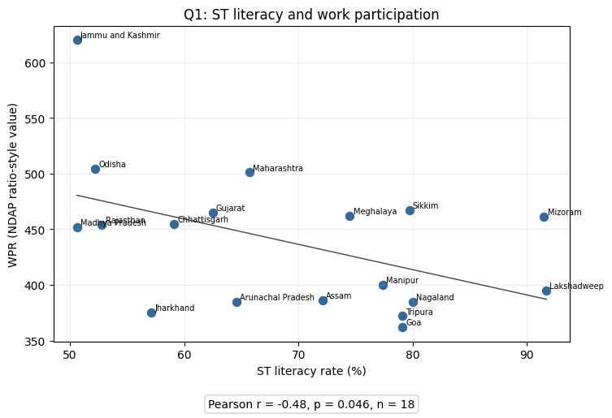
The scatter of ST literacy rate against WPR shows a negative relationship — Pearson r = -0.48, p = 0.046 — meaning that states with higher ST literacy actually tend to have lower work participation, and this relationship is statistically significant. This is the opposite of what a simple education-to-employment story would predict. Jammu and Kashmir sits at the extreme upper-left corner: relatively low ST literacy of around 51% but an exceptionally high WPR of approximately 620. At the other end, high-literacy states like Mizoram and Lakshadweep show moderate WPR values in the 390–460 range. The negative slope is not evidence that literacy suppresses work participation. What it reflects is that the WPR indicator is capturing something structurally different across these states — Jammu and Kashmir's very high WPR likely reflects its particular demographic and labour force composition rather than a genuine literacy-employment pathway. The scatter makes clear that ST literacy rate, read alone, is a poor cross-state predictor of work participation.
2. Literacy gap and work participation
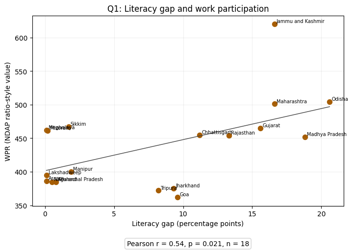
3. ST literacy rate and ST poverty
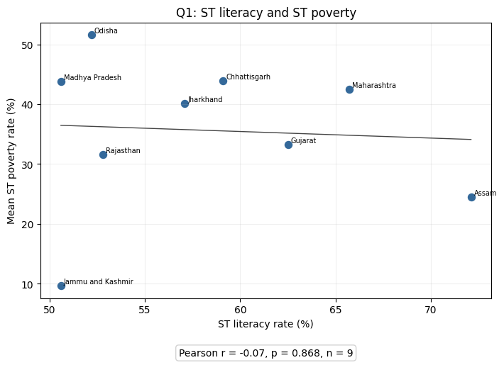
The scatter of ST literacy rate against ST poverty shows essentially no relationship — Pearson r = -0.07, p = 0.868, n = 9. The fitted line is nearly flat. Odisha and Madhya Pradesh both sit at around 51–53% ST literacy but have very different poverty levels. Maharashtra at 65% literacy has poverty around 43%. Assam at 73% literacy has the lowest poverty in the sample at around 25%. Jammu and Kashmir at 51% literacy shows very low poverty of around 10%, sitting far from the general cloud of points. With only nine states in the poverty sample and this much dispersion, the scatter confirms that ST literacy rate carries almost no information about poverty levels at the cross-state level. Literacy and poverty are both shaped by the same long-run structural history but through enough different pathways that they do not correlate with each other cleanly.
4. Literacy gap and ST poverty
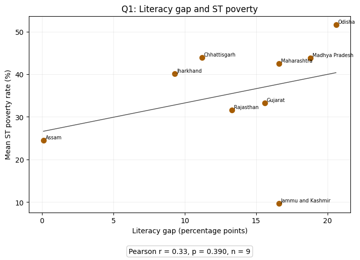
The scatter of the literacy gap against ST poverty shows a weak positive direction — Pearson r = 0.33, p = 0.390 — but this is not statistically significant given only nine states in the poverty sample. Odisha sits at the extreme, with a gap of around 21 percentage points and ST poverty above 50%. Madhya Pradesh and Chhattisgarh also appear in the high-gap, high-poverty region. The notable exception is Jammu and Kashmir, which has one of the largest gaps in the sample at around 20 points but one of the lowest poverty rates at approximately 10%. This single exception substantially weakens the correlation. The direction is plausible — states where ST communities have been left furthest behind the general population in literacy tend to be states with deeper structural disadvantage overall — but the small sample and the Jammu and Kashmir exception mean this should be treated as suggestive rather than conclusive.
Q1 interpretation
Both correlations against WPR run in directions that are difficult to interpret at face value, and Jammu and Kashmir is a consistent structural outlier that influences every scatter. The negative literacy-WPR relationship and the positive gap-WPR relationship are not telling a coherent story about literacy causing employment outcomes in either direction. What they confirm is that ST literacy and the literacy gap are poor cross-state predictors of current work participation and poverty — not because they are irrelevant, but because WPR is measuring labour force participation in ways that include informal and agricultural work, and poverty data is available for too few states to draw firm conclusions. Both literacy indicators are measuring accumulated historical exclusion, not current drivers of livelihood outcomes. The near-zero literacy-poverty correlation makes this especially clear.
Takeaway: The counterintuitive directions of both WPR correlations in Q1 are largely artefacts of Jammu and Kashmir's structural outlier position and the breadth of what WPR captures. ST literacy and the literacy gap should be read as long-run exclusion markers, not as current predictors of employment or poverty. Their value is in identifying states where the historical educational foundation is weakest and where ST communities lag furthest behind the general population, not in predicting cross-state variation in livelihood outcomes.
Q2. Do states with stronger ST schooling participation, measured by GER, also have lower dropout and lower ST poverty?
This question examines whether stronger schooling participation among Scheduled Tribe students is associated with two expected outcomes: lower dropout and lower ST poverty. The results show a mixed picture. GER is useful for measuring schooling access, but it does not automatically indicate educational success or livelihood security. The more important policy signal appears to be retention: whether students stay in school long enough to progress from elementary to secondary education.
Overall, the findings suggest that stronger schooling participation is linked with lower dropout around the transition into secondary school, especially for girls. However, GER does not clearly translate into lower ST poverty. In fact, some of the poverty results are counter-intuitive, showing that high enrolment can coexist with high poverty.
1. GER I–VIII and ST poverty
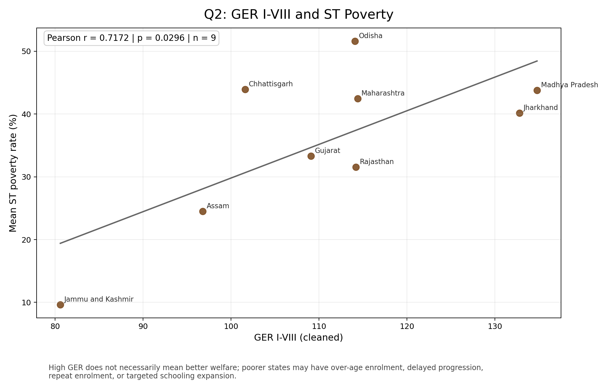
The first result is the most counter-intuitive. GER I–VIII has a strong positive relationship with ST poverty in the available poverty sample. Normally, we might expect higher enrolment to be associated with lower poverty. However, the graph shows that states with higher GER I–VIII also tend to have higher ST poverty.
This does not mean that schooling causes poverty. Instead, it shows that GER should not be interpreted as a welfare indicator by itself. GER is a gross enrolment measure, so it can be high because of over-age enrolment, delayed progression, repeat enrolment, late entry into school, or school access expansion in poorer regions. In other words, a state can have many students enrolled while still struggling with poverty, poor progression, and weak livelihood outcomes. This is because poverty also depends on many factors outside schooling, such as the availability of jobs, local labour-market conditions, rural livelihoods, infrastructure, migration, land access, and state capacity.
States such as Odisha, Madhya Pradesh, Jharkhand, Maharashtra, and Chhattisgarh show relatively high poverty despite high or moderate GER. This suggests that access to school is not enough. The key question is whether students are progressing smoothly and whether schooling eventually improves economic security.
2. Secondary dropout and ST poverty
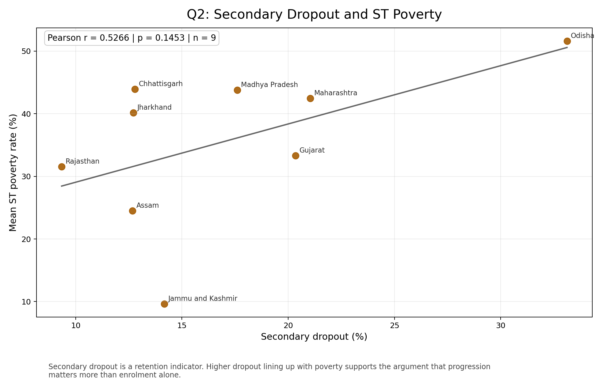
The relationship between secondary dropout and ST poverty is more policy-relevant than the relationship between GER and poverty. The graph shows that states with higher secondary dropout tend to also have higher ST poverty. The result is not statistically conclusive because the poverty data is available for only nine states, but the direction is important.
Dropout is a retention indicator. Unlike GER, which tells us whether students are enrolled, dropout tells us whether students are leaving the school system before completing important stages of education. This makes dropout a sharper signal of educational failure.
Odisha is the clearest example: it has both very high secondary dropout and very high ST poverty. Madhya Pradesh and Maharashtra also show high dropout along with high poverty. Jammu and Kashmir is an exception, with relatively low ST poverty despite moderate dropout. These differences show that dropout is not the only explanation for poverty, but it is still a stronger warning signal than enrolment alone.
3. Secondary GER IX–X and upper-primary dropout
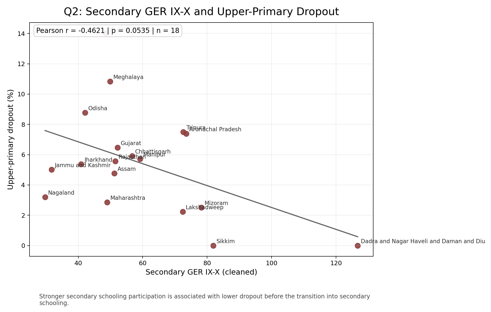
This graph should be read as a transition-stage result. It does not compare enrolment and dropout within the exact same class group. Instead, it compares secondary GER IX–X with upper-primary dropout. Since upper-primary covers Classes VI–VIII, this relationship tells us something about the transition from upper-primary into secondary schooling.
The negative relationship suggests that states with stronger secondary participation tend to have lower dropout before students reach secondary school. This makes sense: if many students are dropping out in Classes VI–VIII, fewer students will be visible in Classes IX–X. Therefore, secondary GER partly reflects whether students are successfully moving through the earlier schooling pipeline.
The result is suggestive rather than definitive because the p-value is slightly above 0.05. Still, it supports an important policy point: improving secondary participation requires attention to earlier dropout. States cannot improve secondary enrolment only by focusing on Classes IX–X; they also need to strengthen retention before students reach that stage.
4. Girls’ secondary GER IX–X and upper-primary dropout
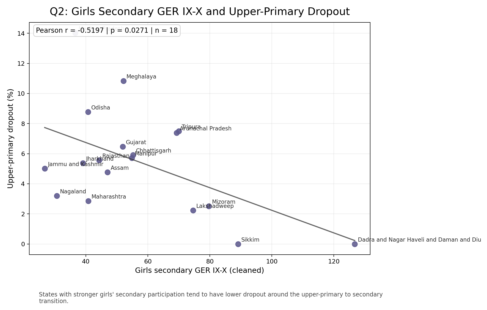
The girls’ secondary GER result is stronger than the overall secondary GER result. States with higher girls’ GER in Classes IX–X tend to have lower upper-primary dropout. This suggests that girls’ progression into secondary education is especially sensitive to whether students are retained through Classes VI–VIII.
This finding is important because girls’ secondary participation is not just a gender indicator. It may also reflect broader schooling conditions such as safety, transport, household support, scholarship access, school availability, and social acceptance of girls continuing education beyond the elementary stage.
The result supports the idea that gender-sensitive education policy should focus not only on enrolment at the secondary level, but also on preventing dropout before secondary school. If girls leave during the upper-primary stage, they never appear in secondary GER in the first place.
5. Gender parity indicators: useful, but not sufficient
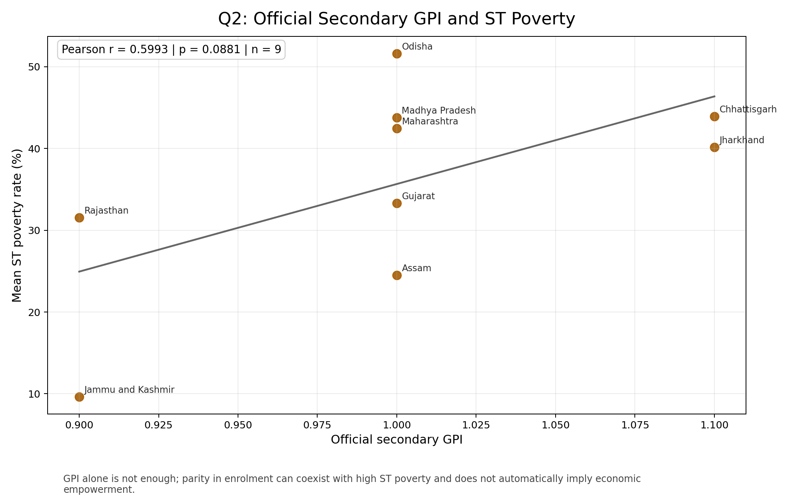
The gender parity result needs careful interpretation. A higher GPI means that girls' enrolment is closer to, or sometimes higher than, boys' enrolment. However, the graph shows that higher secondary GPI can coexist with higher ST poverty. This does not mean that gender parity causes poverty. Rather, it shows that gender parity in enrolment is not the same as economic empowerment.
A state can have gender-balanced schooling and still face high ST poverty if education does not translate into secure work. Girls may be enrolled in school but still face barriers after schooling, such as early marriage, restrictions on mobility, unpaid care work, limited access to paid employment, or social norms that discourage women from joining the labour force. Therefore, equal enrolment does not automatically mean equal labour-market participation.
The labour-market side also matters. Even if girls and boys both complete school, the state may not have enough jobs overall, or the available jobs may not be accessible to ST communities and women. Weak local labour markets, poor transport, low industrial development, discrimination, and lack of suitable work can prevent schooling gains from becoming income gains.
GPI is therefore useful, but incomplete. It should be read alongside actual enrolment levels, dropout, completion, female work participation, poverty, and employment indicators. The key point is that parity in school access is only one stage of empowerment; it does not guarantee equal outcomes after school.
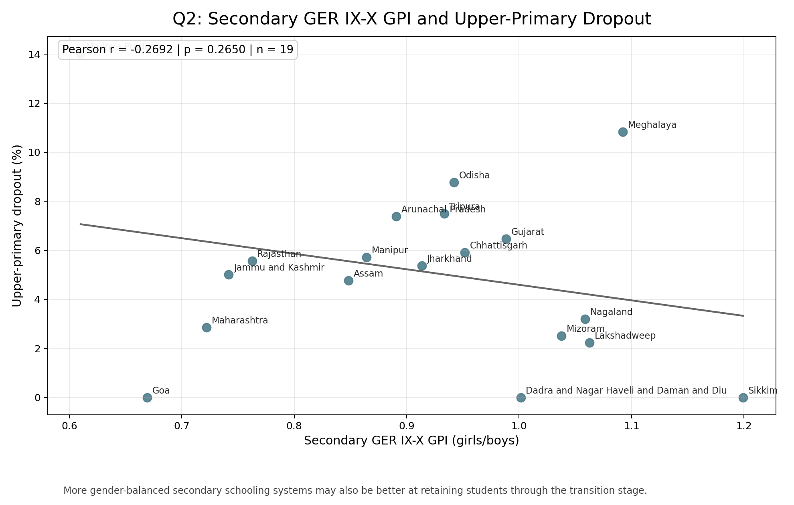
The secondary GER IX–X GPI relationship with upper-primary dropout is weak. This shows why GPI alone is less informative than girls’ GER itself. A state can have a good GPI either because both boys and girls are doing well, or because both are doing poorly. For this reason, the girls’ GER graph provides a clearer signal than the GPI graph.
Q2 interpretation
Taken together, the results show that stronger ST schooling participation is only partly associated with better outcomes. On the dropout side, there is evidence that stronger secondary participation is linked with lower dropout before the transition into secondary school. This relationship is especially clear for girls’ secondary GER.
On the poverty side, however, the relationship is not straightforward. GER does not clearly correspond to lower ST poverty. In fact, GER I–VIII is positively associated with ST poverty in the available sample. This shows that enrolment indicators can look strong even when welfare outcomes remain weak.
The main policy lesson is that enrolment alone should not be treated as educational success. A stronger education system is one where ST students not only enter school, but also progress through upper-primary, reach secondary education, avoid dropout, and eventually gain better livelihood opportunities.
Takeaway: GER captures schooling access, but dropout captures schooling failure more directly. For high-ST states, retention and progression are stronger policy signals than enrolment alone.
Q3. Are enrolment and GER enough to indicate educational progress, or do dropout rates tell a different story?
This question tests whether GER — as the dominant administrative metric of schooling participation — is sufficient to assess educational progress among ST students. The correlations run across multiple versions of GER against secondary dropout and WPR. Looking at the actual graphs, the picture is more varied than a simple "GER tells us nothing" conclusion. The correlations differ in direction across different GER versions, which itself is an important finding.
1. GER IX–XII and secondary dropout
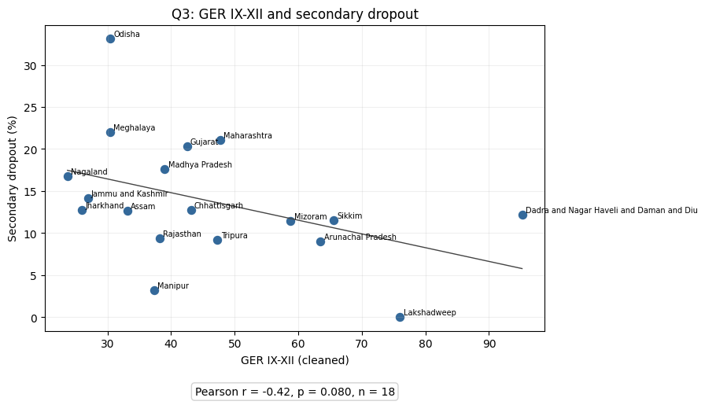
The scatter of GER IX–XII (cleaned) against secondary dropout shows a moderate negative relationship — Pearson r = -0.42, p = 0.080, n = 18 — meaning that states with higher GER tend to have somewhat lower dropout, though the relationship falls just short of conventional significance. Odisha is the most prominent outlier, sitting at a moderate GER around 43 with extremely high dropout of 33%. Dadra and Nagar Haveli and Daman and Diu sits at the far right with very high GER near 95 and moderate dropout around 12%. Manipur and Goa cluster at the lower-dropout end. While the negative direction makes intuitive sense, the p-value of 0.080 and the wide scatter confirm that GER is at best a weak signal for where dropout is occurring. The relationship is suggestive but not strong enough to treat GER as a reliable retention indicator.
2. Latest GER IX–XII average and secondary dropout
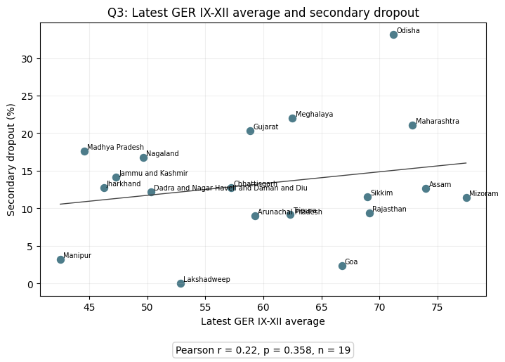
Switching to the latest GER IX–XII average produces a different result: Pearson r = 0.22, p = 0.358, n = 19 — a weak positive slope. On this more recent measure, states with higher enrolment do not show lower dropout; if anything, there is a slight positive association. Odisha again sits at high dropout of around 33% despite a GER around 70. Lakshadweep has the lowest dropout near 0 despite a GER around 53. The reversal in direction between the cleaned GER and the latest GER average is itself informative: different GER measurements classify states differently, meaning GER figures are sensitive to how they are calculated and which year they come from. A metric this unstable in direction across versions should not be the primary basis for assessing retention progress.
3. GER Gender Parity Index and secondary dropout
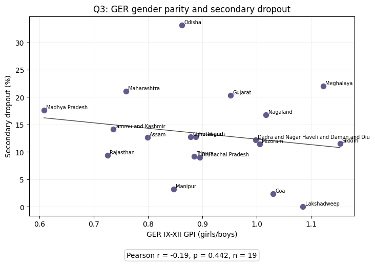
The scatter of the GER gender parity index — the girls-to-boys enrolment ratio in IX–XII — against secondary dropout shows a weak negative relationship: Pearson r = -0.19, p = 0.442. Madhya Pradesh sits at the far left with a GPI of around 0.6 and high dropout of 18%. Meghalaya appears at the upper right with GPI above 1.1 and dropout around 22%, a clear exception — girls outnumber boys in enrolment but dropout remains high. Lakshadweep and Goa sit at high GPI and near-zero dropout. The weak and insignificant correlation confirms that gender parity in enrolment gives almost no information about whether students of either gender are being retained through secondary completion.
4. Official GPI IX–XII and secondary dropout
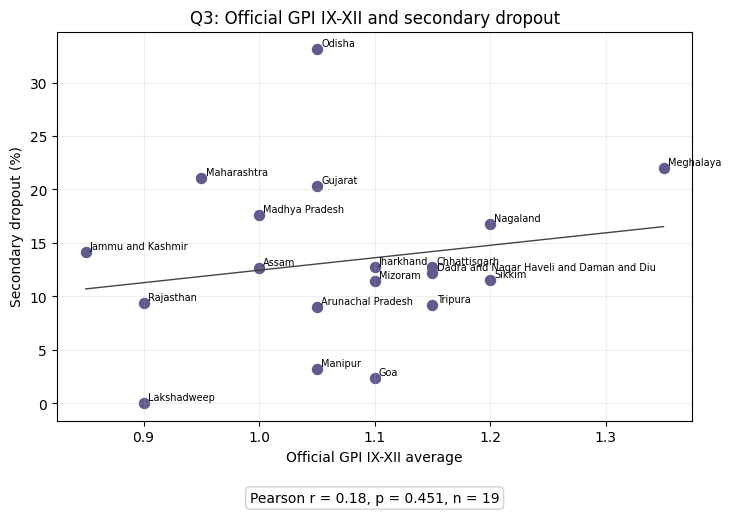
The official GPI IX–XII average against secondary dropout shows a weak positive relationship: Pearson r = 0.18, p = 0.451. The slope tilts slightly upward — higher official GPI is weakly associated with higher dropout — which is counterintuitive but not statistically meaningful. Meghalaya is the most striking case: with GPI of 1.35, the highest in the sample, it also has dropout around 22%. Lakshadweep and Manipur sit at GPI around 1.0 with very low dropout. Odisha and Gujarat appear at GPI near 1.0 with high dropout. The positive tilt driven by Meghalaya reinforces the point that gender parity in enrolment and retention are disconnected: Meghalaya achieves strong girls' representation in enrolment while still losing a significant share of students before completion.
5. GER IX–XII and work participation
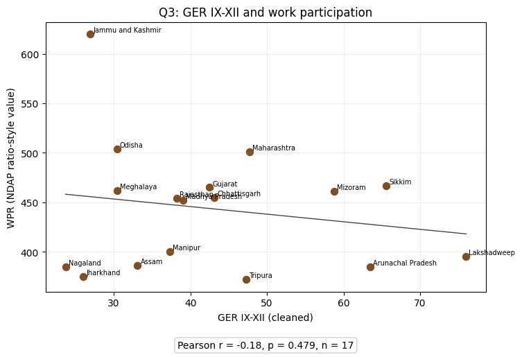
The scatter of GER IX–XII against WPR shows a weak negative relationship: Pearson r = -0.18, p = 0.479. Jammu and Kashmir sits at the top left — low GER around 25 and very high WPR around 620 — as a consistent outlier across the full analysis. Maharashtra and Odisha show moderate GER with relatively high WPR. Lakshadweep at the far right with GER around 76 has moderate WPR around 395. The relationship is not statistically significant and the scatter is very wide. The weak negative direction is substantially influenced by Jammu and Kashmir. Excluding that state, the pattern is essentially flat — secondary enrolment levels carry no meaningful signal about work participation across these states.
6. Primary enrolment and secondary dropout
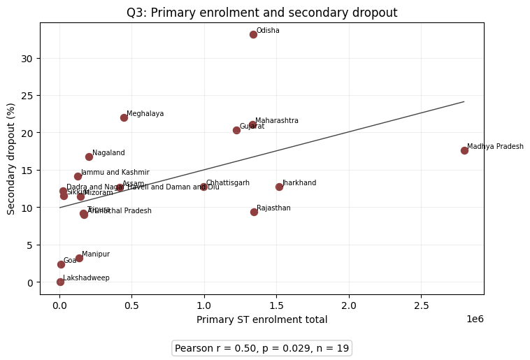
Unlike the other GER-related scatters, the relationship between total primary ST enrolment and secondary dropout is statistically significant: Pearson r = 0.50, p = 0.029, n = 19. Larger primary enrolment is positively associated with higher dropout. Madhya Pradesh sits at the far right with nearly 2.8 million primary ST students and dropout around 18%. Odisha has around 1.3 million primary students and 33% dropout. Smaller states — Lakshadweep, Goa, Manipur — cluster at the left with low enrolment and low dropout. This positive relationship is a scale effect rather than a meaningful educational finding: larger states naturally have more primary students in absolute terms, and several of those larger states also happen to have higher dropout driven by other structural factors. The correlation should not be read as primary enrolment causing dropout. It reflects that states with the largest ST populations are also states with historically weaker retention infrastructure, making this scatter informative about which states need the most attention, but not about any direct enrolment-to-dropout mechanism.
Q3 interpretation
The six scatters together do not tell a single clean story. The direction of the GER-dropout relationship varies across GER versions — negative in the cleaned GER, weakly positive in the latest average — which means GER is not a stable enough indicator to anchor policy assessments of retention. GPI in both versions is essentially unrelated to dropout. The only statistically significant result is the scale-driven positive correlation between primary enrolment totals and dropout, which reflects structural disadvantage in large states rather than any enrolment mechanism. Across all versions, no GER measure reliably identifies where ST students are being lost before secondary completion.
Takeaway: No version of GER consistently predicts secondary dropout. The directions of correlation shift depending on which GER measure is used, and GPI is disconnected from retention in both its forms. Dropout cannot be read from enrolment data, and states monitoring only GER will miss where retention is failing.
Q4. Does the ST literacy gap matter more than the ST literacy level?
This question compares two ways of understanding educational disadvantage among Scheduled Tribe populations. The first is the absolute ST literacy rate, which tells us how literate the ST population is within a state. The second is the literacy gap, which measures how far ST literacy falls behind the broader state population.
The distinction matters because a state can have a moderate or even high ST literacy rate but still have a large gap between ST communities and the rest of the population. In that case, the problem is not only low literacy, but unequal educational progress. This makes the literacy gap a useful indicator of relative exclusion.
1. Literacy gap and secondary dropout
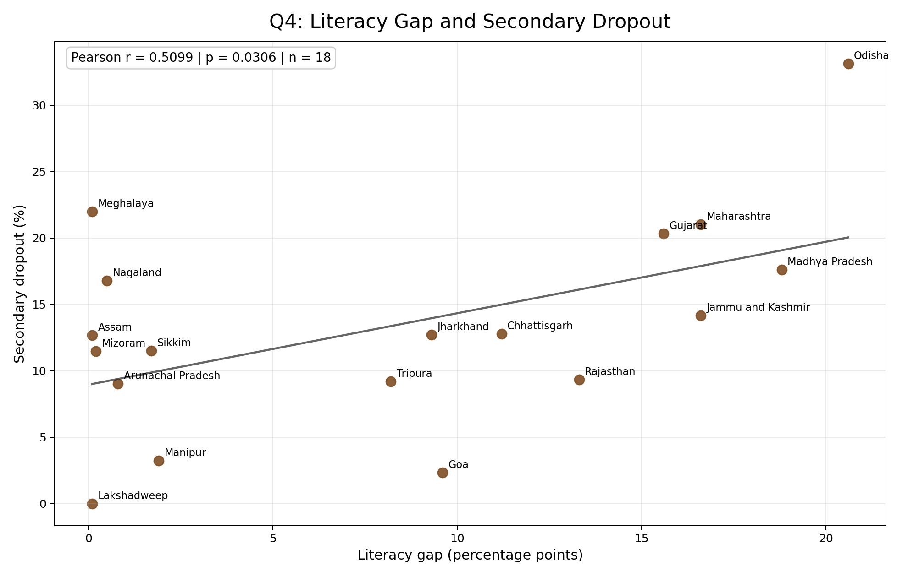
The strongest direct finding in this section is that states with larger ST literacy gaps tend to have higher secondary dropout. The relationship is moderate and statistically meaningful, with a Pearson correlation of 0.5099 and a p-value of 0.0306. This means that relative educational disadvantage is not only visible in literacy outcomes, but also appears to be connected with students leaving school at the secondary stage.
Odisha is the clearest high-risk case in this graph. It has both a very large literacy gap and very high secondary dropout. Gujarat, Maharashtra, Madhya Pradesh, and Jammu and Kashmir also appear on the higher-gap side of the graph, showing that the literacy gap can help identify states where ST communities are lagging behind in a deeper structural sense.
However, the relationship is not perfect. Meghalaya has high secondary dropout despite a very small literacy gap, while Goa has a relatively large literacy gap but low secondary dropout. These exceptions show that literacy gap is important, but it should not be used alone. It should be read alongside dropout, poverty, employment, gender indicators, and state-specific context.
2. ST literacy level and literacy gap together
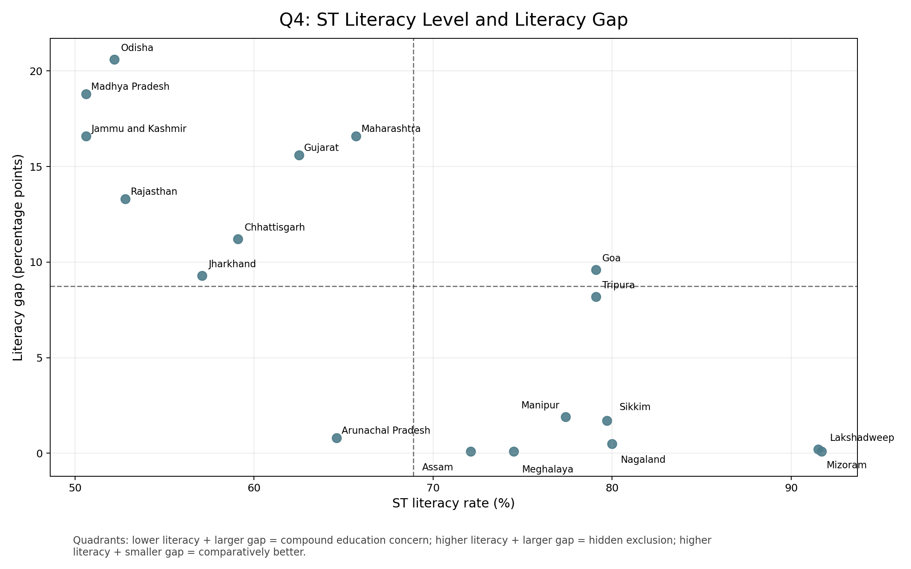
The quadrant plot is useful because it shows that ST education disadvantage has two dimensions: absolute literacy and relative inequality. States in the lower-literacy and higher-gap quadrant face compound education disadvantage. These are states where ST literacy is low and the gap from the broader population is also large.
Odisha, Madhya Pradesh, Jammu and Kashmir, Rajasthan, Gujarat, Maharashtra, Chhattisgarh, and Jharkhand are important concern cases because they have relatively low ST literacy, large literacy gaps, or both. Odisha and Madhya Pradesh are especially serious because they combine low ST literacy with very large gaps.
States such as Mizoram, Lakshadweep, Sikkim, Manipur, Nagaland, Assam, and Meghalaya appear in a comparatively better position because they have higher ST literacy and smaller literacy gaps. This does not mean they have no education problems, but it suggests that their ST communities are not as far behind the broader state population on literacy.
Goa and Tripura are interesting cases because they have relatively higher ST literacy but still show a noticeable literacy gap. These states can be interpreted as hidden-exclusion cases: the absolute level of ST literacy may look acceptable, but ST communities still lag behind the general population.
3. Which matters more: ST literacy level or literacy gap?
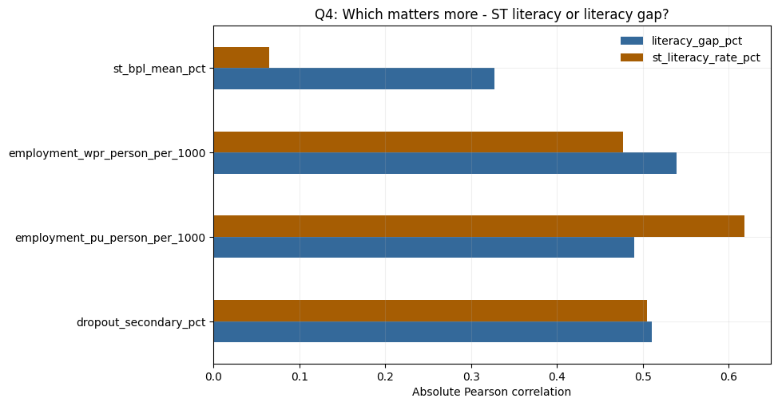
The comparison chart shows that the literacy gap is often a stronger predictor than the ST literacy rate. For ST poverty, the literacy gap has a stronger relationship than the ST literacy level, although the poverty sample is small and the relationship is not statistically strong. For work participation, the literacy gap also has a stronger association than the ST literacy rate.
For the employment PU indicator, the ST literacy rate is the stronger predictor. This suggests that absolute literacy still matters for some employment outcomes. In other words, the analysis should not replace literacy level with literacy gap. Both are useful, but they tell us different things.
For secondary dropout, the literacy gap is only slightly stronger than the ST literacy rate. The correlation with literacy gap is 0.5099, while the runner-up absolute correlation for ST literacy rate is 0.5051. This means both measures are relevant for dropout, but the gap has a small advantage because it captures relative educational exclusion.
Q4 interpretation
The results suggest that the literacy gap is a better policy signal than ST literacy level alone. ST literacy tells us whether a community has reached a basic educational threshold, but the literacy gap tells us whether ST communities are falling behind the rest of the state. This relative disadvantage matters because it can reveal exclusion even in states where the absolute literacy rate does not look extremely low.
The positive relationship between literacy gap and secondary dropout is especially important. It suggests that states where ST communities are further behind in literacy also tend to lose more students at the secondary stage. This supports the idea that dropout is not only a schooling access problem, but also a deeper inequality problem.
At the same time, the analysis should not ignore absolute ST literacy. Some states have low ST literacy and large gaps at the same time, making them compound-disadvantage states. These states require stronger foundational literacy support, remedial learning, and targeted retention policies.
Takeaway: ST literacy level shows the absolute education condition, but the literacy gap shows relative exclusion. For policy targeting, the literacy gap is often the sharper indicator because it reveals whether ST communities are being left behind within their own states.
Q5. Does MGNREG unmet demand reflect deeper livelihood distress among ST households?
This question examines whether MGNREG-related indicators reveal deeper livelihood distress among Scheduled Tribe households. The analysis uses two MGNREG measures: households receiving 100-plus days of work per 1000, and households who sought work but did not receive it per 1000. The second measure, unmet demand, is the stronger distress indicator because it captures households that needed work but were unable to access it.
The results show that MGNREG unmet demand is closely associated with other signs of disadvantage. States with higher unmet demand tend to have higher secondary dropout, lower ST literacy, and higher ST poverty. In contrast, the 100-plus-days measure has a much weaker relationship with dropout. This suggests that the problem is not simply public-work dependence, but unfulfilled demand for work.
1. Which states have the highest MGNREG unmet demand?
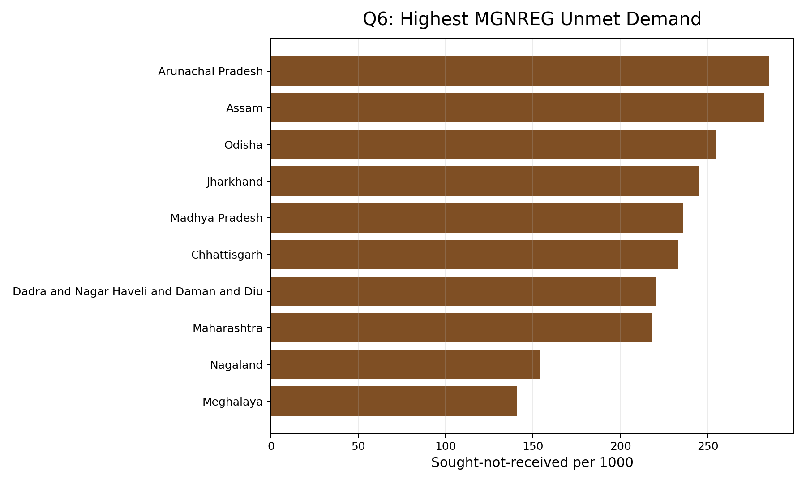
The unmet demand ranking shows where ST households are most likely to report seeking MGNREG work but not receiving it. This is an important livelihood-distress indicator because it captures a gap between need and actual access to public employment.
Arunachal Pradesh and Assam appear at the top of the ranking, followed by Odisha, Jharkhand, Madhya Pradesh, Chhattisgarh, Dadra and Nagar Haveli and Daman and Diu, and Maharashtra. These states should be read as places where the demand for wage work is high, but the work-provision mechanism may not be fully meeting household need.
This graph is useful because it shifts the focus away from only poverty or dropout. It shows that livelihood distress can also be visible through public employment demand. If households seek work but do not receive it, that may indicate income insecurity, weak local labour markets, or implementation gaps in work provision.
2. MGNREG unmet demand and ST poverty
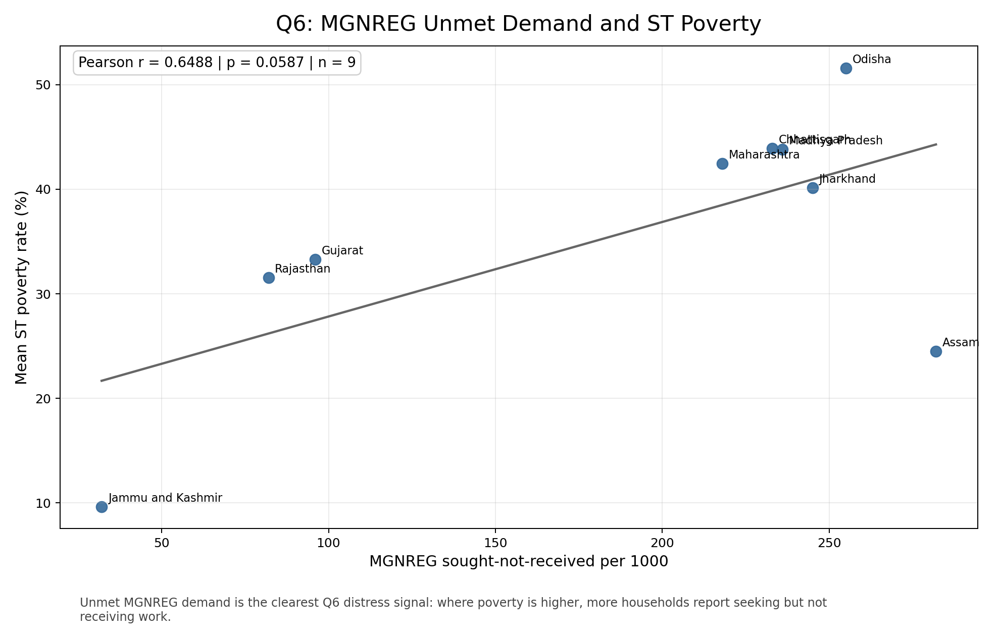
The strongest poverty-related result is the positive relationship between MGNREG unmet demand and ST poverty. States with higher ST poverty tend to also have more households reporting that they sought but did not receive MGNREG work. The correlation is strong, although the p-value is slightly above 0.05 because poverty data is available for only nine states.
Odisha is the clearest high-distress case: it has both very high ST poverty and high MGNREG unmet demand. Madhya Pradesh, Chhattisgarh, Jharkhand, and Maharashtra also sit in the high-poverty and high-unmet-demand cluster. This suggests that unmet demand is capturing genuine livelihood vulnerability rather than being a random administrative statistic.
Assam is an important exception. It has high unmet demand but comparatively lower ST poverty in this sample. This shows that MGNREG unmet demand should not be treated as identical to poverty. Instead, it should be treated as a complementary distress indicator that can reveal pressure in the rural labour market even where poverty estimates are lower.
3. MGNREG unmet demand and secondary dropout
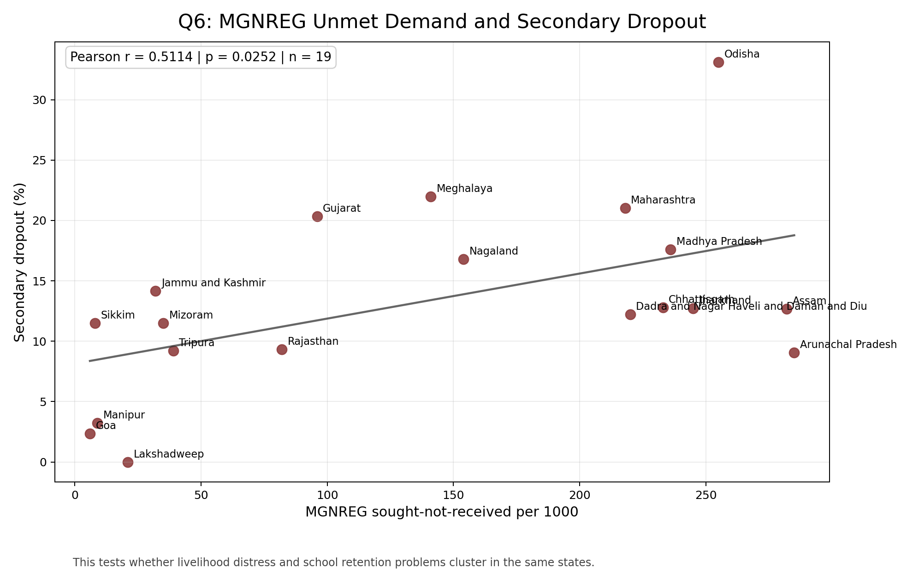
MGNREG unmet demand is also positively associated with secondary dropout. States where more ST households seek but do not receive work tend to have higher secondary dropout. This relationship is statistically meaningful, with a p-value of 0.0252.
This result is important because it connects livelihood distress with school retention. If households face economic pressure, students may be more likely to leave school, either because of direct costs, opportunity costs, household labour needs, migration, or weak expectations that schooling will lead to better work. The graph does not prove causality, but it shows that livelihood distress and educational retention problems cluster in the same states.
Odisha again stands out as a serious concern case, with both high unmet demand and very high secondary dropout. Maharashtra, Gujarat, Madhya Pradesh, Meghalaya, and Nagaland also show notable dropout levels alongside moderate to high unmet demand. This supports the broader project argument that education and livelihood outcomes should be studied together rather than separately.
4. MGNREG unmet demand and ST literacy
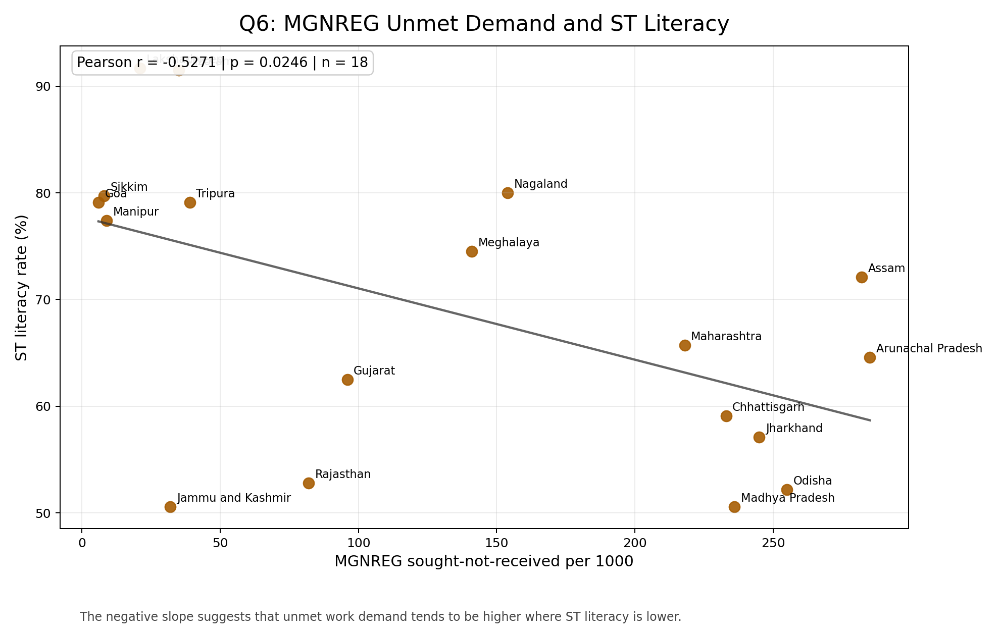
The relationship between unmet demand and ST literacy is negative. This means that states with higher MGNREG unmet demand tend to have lower ST literacy. This is one of the strongest Q6 results because it links livelihood distress directly with weaker educational foundations.
Odisha, Madhya Pradesh, Jharkhand, Chhattisgarh, Rajasthan, and Jammu and Kashmir fall toward the lower-literacy side of the graph. Many of these states also show moderate to high unmet demand. This suggests that weaker educational foundations and livelihood vulnerability may reinforce each other.
However, there are exceptions. Assam and Arunachal Pradesh have high unmet demand despite higher ST literacy than some other states. This means that literacy is not the only factor shaping livelihood distress. Local labour markets, implementation capacity, geography, and state-level employment conditions may also matter.
5. 100-plus-days employment among ST households
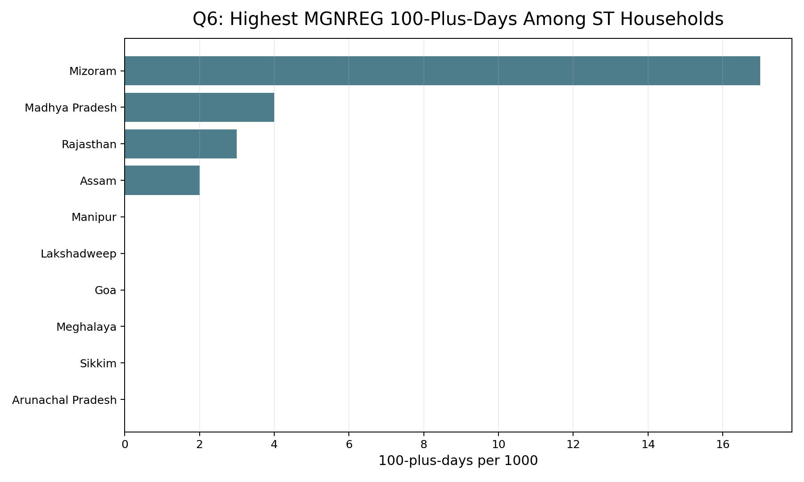
The 100-plus-days measure tells a different story from unmet demand. Mizoram is a major outlier, while most other states show very low levels of 100-plus-days employment per 1000 households. This suggests that the measure is not capturing distress in the same way as sought-not-received demand.
Receiving 100-plus days of work can mean that households are heavily dependent on public employment, but it can also mean that the scheme is functioning and work is actually being provided. For that reason, this indicator is harder to interpret as pure distress. It may reflect both need and implementation capacity.
6. 100-plus-days employment and secondary dropout
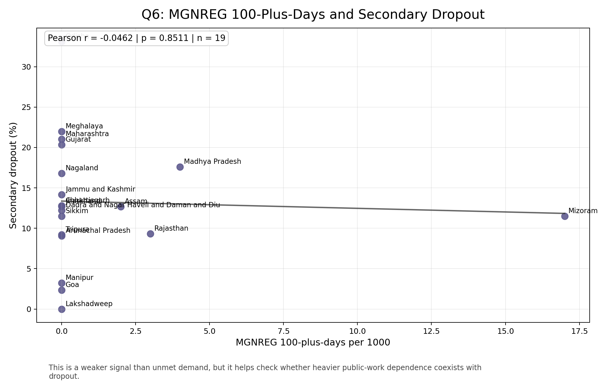
The 100-plus-days measure has almost no relationship with secondary dropout. The correlation is close to zero, and the p-value is very high. This means that heavier receipt of 100-plus-days employment does not clearly line up with higher or lower dropout across the high-ST states.
This contrast is important. It shows that not all MGNREG indicators capture the same kind of distress. The number of households receiving 100-plus days of work is not strongly linked with school retention problems. But unmet demand, or seeking work and not receiving it, is linked with dropout, literacy, and poverty.
Q5 interpretation
Taken together, the Q5 results show that MGNREG unmet demand is a strong livelihood-distress signal among ST households. It is positively associated with secondary dropout and ST poverty, and negatively associated with ST literacy. This suggests that states where households face unfulfilled demand for public work also tend to face weaker education and livelihood outcomes.
The key distinction is between receiving work and not receiving work. The 100-plus-days measure does not show a meaningful relationship with dropout, partly because receiving many days of work may reflect both household need and effective implementation. In contrast, unmet demand more directly captures vulnerability because it represents households who asked for work but did not get it.
The policy implication is that MGNREG should be read not only as an employment scheme, but also as a diagnostic indicator. High unmet demand may reveal areas where ST households face income insecurity, weak local employment options, or implementation gaps in access to public work. These same areas may also need stronger education-retention support, especially at the secondary level.
Takeaway: MGNREG unmet demand reflects deeper livelihood distress more clearly than 100-plus-days employment. Where ST households seek but do not receive work, states also tend to show higher dropout, lower literacy, and higher poverty.
Q6. Are scholarship-supported states seeing lower secondary dropout among ST students?
This question tests whether states receiving higher ST scholarship funding are also the states with lower secondary dropout. The analysis uses scholarship release and utilization data from 2023–24 alongside cumulative release over 2019–24, normalizing for ST population size to allow fair cross-state comparison. The three scatters examine per-capita scholarship release against dropout, scholarship utilization rate against dropout, and cumulative scholarship release against poverty.
1. Per-capita scholarship release and secondary dropout
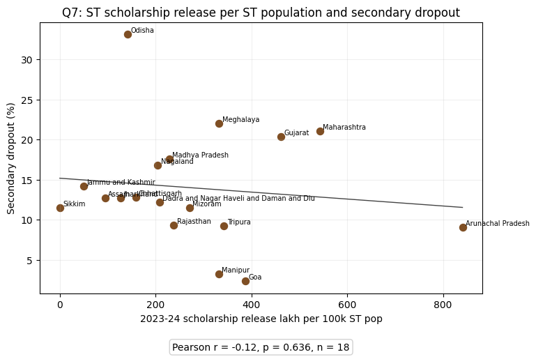
The scatter of 2023–24 scholarship release per 100,000 ST population against secondary dropout shows a weak negative relationship — Pearson r = -0.12, p = 0.636, n = 18 — meaning there is a very slight tendency for higher per-capita release to coincide with lower dropout, but the relationship is statistically negligible. Odisha is the most prominent outlier: it receives relatively low per-capita scholarship release of around 100 lakh per 100,000 ST population and has by far the highest dropout in the sample at 33%. Arunachal Pradesh sits at the far right with very high per-capita release of around 840 and low dropout of about 9%. Goa and Manipur also appear at the low-dropout end with varying release levels. The weak negative direction is in the expected direction, but the wide scatter and the Odisha outlier mean that per-capita release alone is not identifying where retention is strongest.
2. Scholarship utilization rate and secondary dropout
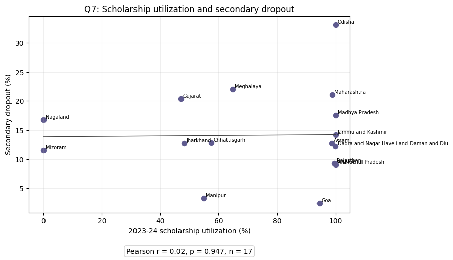
The scatter of scholarship utilization rate against secondary dropout shows essentially no relationship — Pearson r = 0.02, p = 0.947, n = 17. The most striking feature of this graph is the clustering: the vast majority of states report utilization rates between 90 and 100%, meaning nearly all released funds are being recorded as utilized. Nagaland and Mizoram sit at the far left with 0% utilization and have relatively low dropout rates of around 17% and 12% respectively. Odisha at near 100% utilization still has 33% dropout. The near-zero correlation and the tight clustering of most states at full utilization means this scatter is not distinguishing states in a useful way. If almost every state is reporting full utilization, the utilization rate is not functioning as a diagnostic variable for delivery failure in this dataset.
3. Cumulative scholarship release and ST poverty
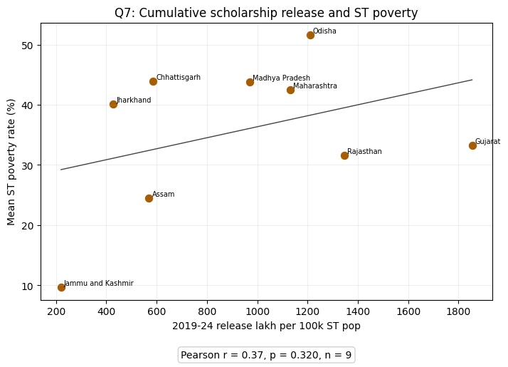
The scatter of cumulative scholarship release over 2019–24 per 100,000 ST population against ST poverty shows a weak positive relationship — Pearson r = 0.37, p = 0.320, n = 9. Gujarat sits at the far right with the highest cumulative release of around 1,850 lakh per 100,000 ST population and moderate poverty of around 33%. Odisha has high cumulative release of around 1,200 and the highest poverty at 52%. Jammu and Kashmir has the lowest cumulative release and the lowest poverty at 10%. The positive slope — where higher cumulative scholarship funding weakly coincides with higher poverty — is a targeting artefact: states with higher poverty and greater need tend to attract or receive more scholarship funding over time. The positive direction should not be read as scholarships increasing poverty. It reflects that the most deprived states have been receiving more support, but the poverty gap has not closed sufficiently to reverse the association in cross-sectional data.
Q6 interpretation
Across all three scatters, the scholarship data does not show a clean protective effect on dropout or poverty, but the reasons differ by graph. The per-capita release scatter shows a weak expected-direction relationship swamped by the Odisha outlier. The utilization scatter is effectively uninformative because most states cluster at near-full utilization, leaving no variation to explain. The cumulative release and poverty scatter shows a positive slope driven by targeting. None of these results are evidence that scholarships are ineffective; they demonstrate the limits of cross-sectional correlations when treatments are concentrated where problems are worst and when reported utilization does not vary meaningfully across states.
Takeaway: Per-capita scholarship release shows a weak and non-significant negative correlation with dropout. Utilization rates cluster so tightly at 100% that the variable carries no diagnostic power in this dataset. Cumulative release is positively associated with poverty because funding follows need. None of these patterns constitute evidence against scholarships, but they confirm that funding alone — without addressing school quality, household economics, and retention infrastructure — is insufficient.
Q7. Do states with high ST schooling participation still depend heavily on MGNREG?
This question tests whether stronger ST schooling participation is enough to reduce dependence on MGNREG-related livelihood support. The analysis uses latest secondary GER for Classes IX-X as the schooling participation indicator and compares it with three MGNREG indicators: average days worked, 100-plus-days work, and unmet demand measured as households that sought work but did not receive it.
The overall result is mixed. Higher secondary GER does not consistently correspond to lower MGNREG dependence or lower MGNREG unmet demand. Some states with high schooling participation still show heavy MGNREG use or high unmet demand. This suggests that school participation and livelihood security do not always improve together. The strongest signal in this question comes not from GER, but from secondary dropout: states with higher dropout also tend to report higher unmet MGNREG demand.
1. Highest average MGNREG days worked
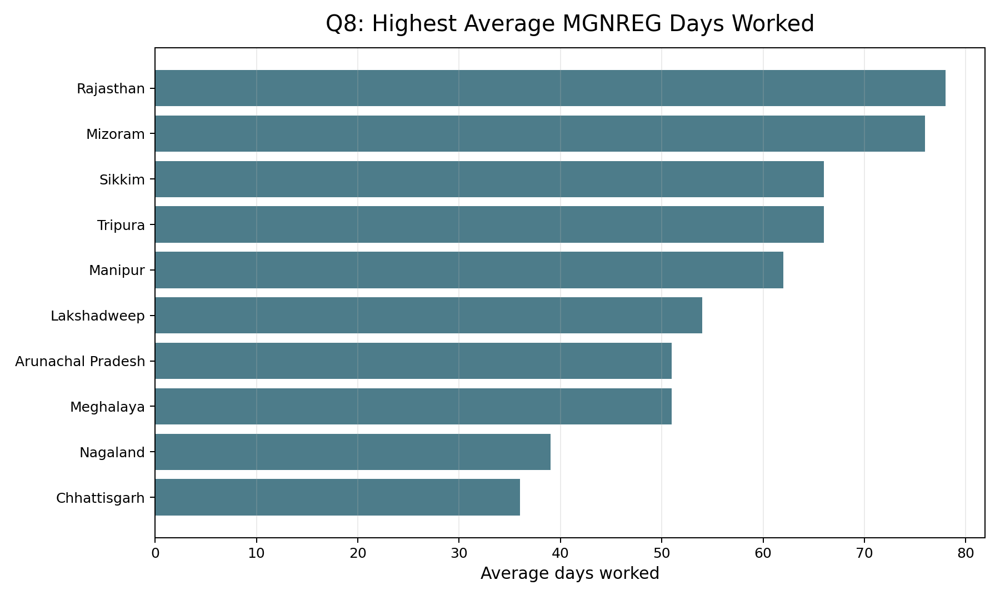
The average-days-worked indicator shows the broad level of MGNREG use among households. Rajasthan and Mizoram stand out as the highest, followed by Sikkim, Tripura, Manipur, Lakshadweep, Arunachal Pradesh, Meghalaya, Nagaland, and Chhattisgarh.
This indicator should be interpreted carefully. High average days worked may reflect livelihood dependence, but it can also mean that the scheme is functioning and that households are actually receiving work. Therefore, average days worked is useful for identifying MGNREG reliance, but it is not always a pure distress indicator.
2. Highest MGNREG unmet demand
Unmet demand is a sharper livelihood-distress measure than average days worked because it captures households that sought MGNREG work but did not receive it. Arunachal Pradesh and Assam show the highest unmet demand, followed by Odisha, Jharkhand, Madhya Pradesh, Chhattisgarh, Dadra and Nagar Haveli and Daman and Diu, Maharashtra, Nagaland, and Meghalaya.
This ranking suggests that livelihood stress is not only about whether households use MGNREG, but also whether the demand for work is being met. A state can have high need for public employment but still fail to provide enough work to households that ask for it.
3. Latest secondary GER IX-X and MGNREG 100-plus-days
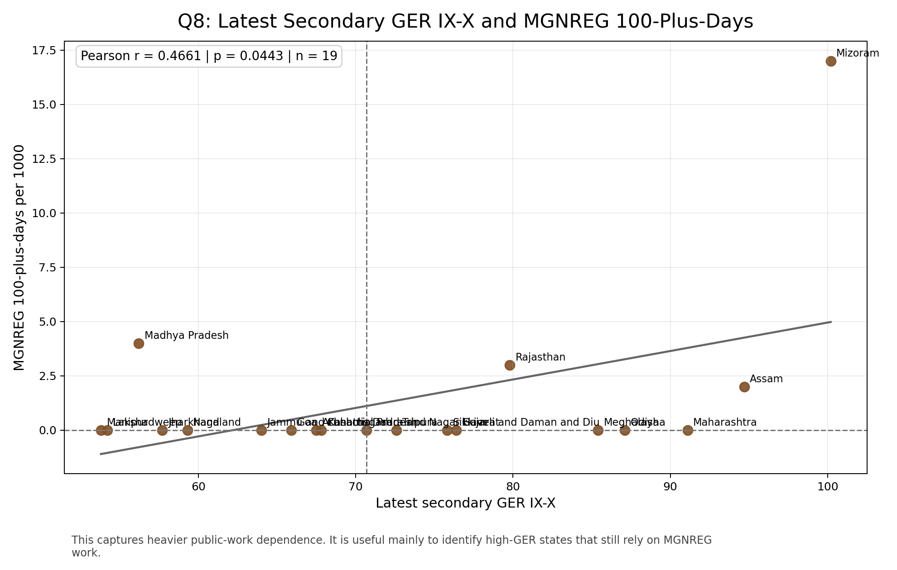
This graph shows a moderate positive relationship between latest secondary GER IX-X and the number of households receiving 100-plus days of MGNREG work. This is important because it goes against the simple expectation that higher schooling participation should automatically reduce dependence on public employment.
Mizoram is the clearest outlier: it has very high secondary GER and also the highest 100-plus-days value. Rajasthan and Madhya Pradesh also contribute to the positive slope. However, many states cluster close to zero on the 100-plus-days measure, so this result should be interpreted cautiously.
The correct interpretation is not that higher schooling causes more MGNREG dependence. Rather, the graph shows that high schooling participation can coexist with heavy public-work reliance in some states. This supports the broader mismatch argument: schooling participation may improve without fully removing household dependence on employment support.
4. Latest secondary GER IX-X and average MGNREG days worked
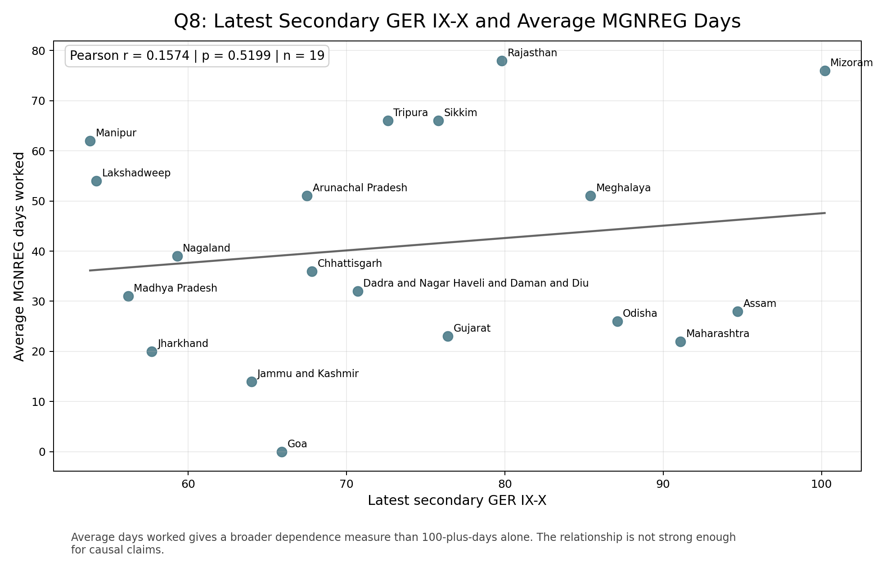
When MGNREG dependence is measured using average days worked, the relationship with secondary GER becomes weak. The correlation is small and statistically insignificant. This means that states with higher secondary GER do not consistently show either higher or lower average MGNREG days worked.
This weak relationship is useful because it tempers the 100-plus-days result. While a few states show high GER and high 100-plus-days employment, the broader average-days measure does not show a strong pattern. Schooling participation and average public-work use are therefore only loosely connected.
This supports the main Q8 argument: higher ST schooling participation does not guarantee lower livelihood dependence, but it also does not have a simple one-direction relationship with MGNREG use.
5. Latest secondary GER IX-X and MGNREG unmet demand
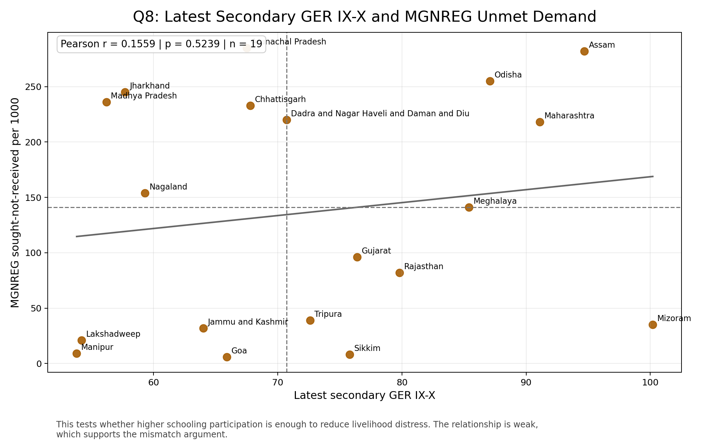
This graph directly tests whether stronger schooling participation is associated with lower livelihood distress. If secondary schooling participation were enough to reduce household distress, we would expect a clear negative relationship between GER and unmet MGNREG demand. The data does not show that pattern.
The relationship is weak and statistically insignificant. Some high-GER states still show high unmet demand. Assam, Odisha, and Maharashtra are important examples because they have relatively high secondary GER but also high sought-not-received demand. Mizoram, on the other hand, has very high GER and low unmet demand, showing that the pattern varies sharply across states.
This is one of the clearest pieces of evidence for the mismatch argument. Higher schooling participation does not automatically mean that households face less employment insecurity. Education access may improve, but local labour markets, household income insecurity, and public employment access can remain weak.
6. Secondary dropout and MGNREG unmet demand
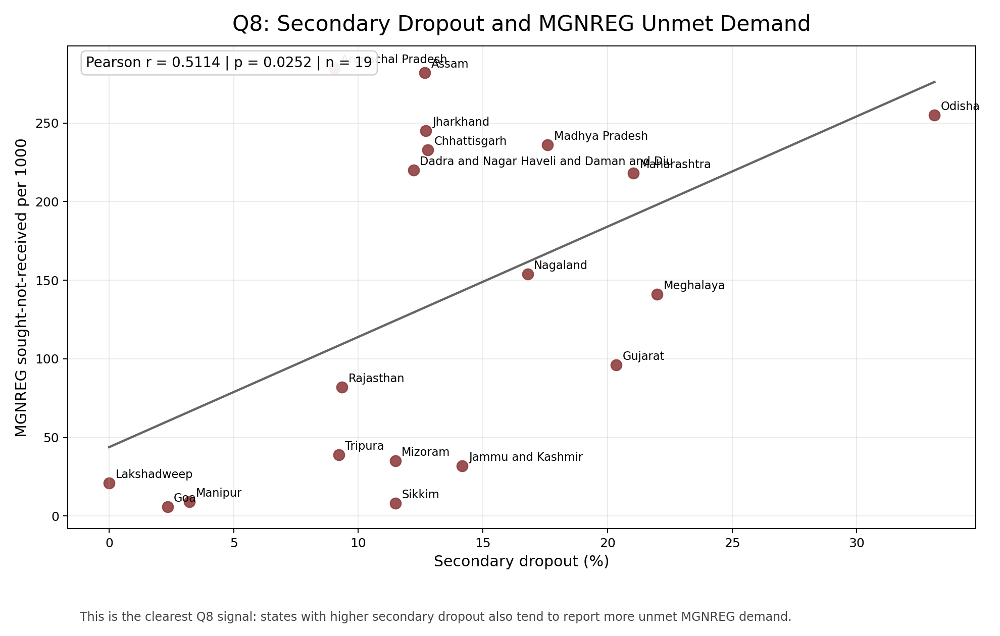
This is the clearest Q8 result. Unlike secondary GER, secondary dropout has a meaningful positive relationship with MGNREG unmet demand. States with higher secondary dropout tend to report more households seeking but not receiving MGNREG work.
This suggests that livelihood distress is more closely connected to retention failure than to enrolment alone. GER tells us whether students are participating in school, but dropout tells us whether students are being lost from the system. When dropout is high and unmet work demand is also high, it points to a deeper education-livelihood problem.
Odisha, Madhya Pradesh, Maharashtra, Jharkhand, Chhattisgarh, Assam, and Arunachal Pradesh appear as important concern cases because they show high unmet demand and/or high dropout. These states suggest that schooling and livelihood policy should be connected rather than treated as separate issues.
Q7 interpretation
The Q7 results show that high ST schooling participation does not automatically mean low MGNREG dependence. Secondary GER has only weak relationships with average MGNREG days worked and unmet MGNREG demand. The only stronger GER-related result is with 100-plus-days employment, but that relationship is influenced by a few standout states and should not be interpreted causally.
The stronger and more meaningful relationship is between secondary dropout and MGNREG unmet demand. This suggests that the real issue is not simply whether students are enrolled, but whether they are retained in school while households also gain livelihood security. Where households continue to face unmet demand for work, students may remain more vulnerable to dropping out.
Therefore, Q8 supports the broader project argument: education indicators must be interpreted alongside livelihood indicators. A state may show relatively strong schooling participation and still have households that depend heavily on MGNREG or cannot access the work they seek.
Takeaway: High ST schooling participation does not automatically imply low MGNREG dependence. The clearest warning signal is not GER, but the combination of secondary dropout and unmet demand for work.
Q8. Does gender parity in enrolment translate into better female literacy and work outcomes?
This question tests whether GPI values at the secondary level correspond to better outcomes for ST women: higher female literacy and stronger female WPR. The female WPR values here are NDAP ratio-style values, where higher numbers indicate stronger participation.
1. Official GPI IX–XII and female ST literacy
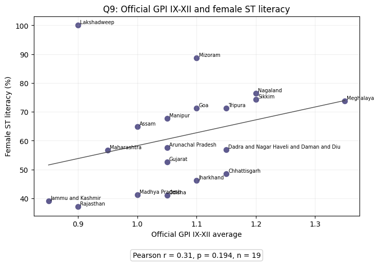
The scatter of official GPI IX–XII against female ST literacy shows a weak positive relationship — Pearson r = 0.31, p = 0.194, n = 19. Lakshadweep is a pronounced outlier at the upper left: GPI of around 0.9 and female ST literacy of 100%. Mizoram also sits high at around 89% female literacy with GPI around 1.1. Meghalaya is at the far right with the highest GPI of 1.35 and female literacy around 73%. Rajasthan and Jammu and Kashmir sit at the lower left, with low GPI and female ST literacy below 40%. The positive slope is in the expected direction — states with better gender parity in enrolment tend to have somewhat higher female ST literacy — but the correlation is weak and not statistically significant. The timelines are also mismatched: current GPI captures recent enrolment conditions, while female ST literacy reflects cumulative access over decades. The two indicators are measuring different generations.
2. Official GPI IX–XII and female work participation
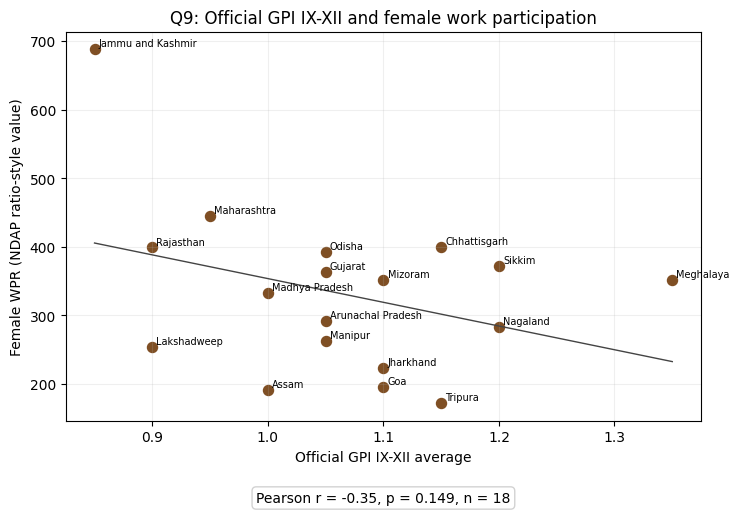
The scatter of official GPI IX–XII against female WPR shows a moderate negative relationship — Pearson r = -0.35, p = 0.149, n = 18. This is the opposite of what gender parity in schooling would be expected to produce. Jammu and Kashmir sits at the extreme upper left: GPI around 0.83 and female WPR of approximately 690, the highest in the sample by a considerable margin. Meghalaya at GPI 1.35 has female WPR around 355 — lower than many states with far less enrolment parity. Maharashtra at GPI around 0.95 shows high female WPR near 445. The negative slope is substantially driven by Jammu and Kashmir — a state where high female work participation coexists with below-parity secondary enrolment for girls, likely because female WPR there includes agricultural and informal labour rather than reflecting education-to-employment pathways. This negative relationship is not evidence that gender parity in enrolment reduces female work participation; it reflects that female WPR is shaped primarily by labour market structure, agricultural economy, and informal work patterns rather than by schooling participation levels.
3. Girls' GER IX–XII and female work participation
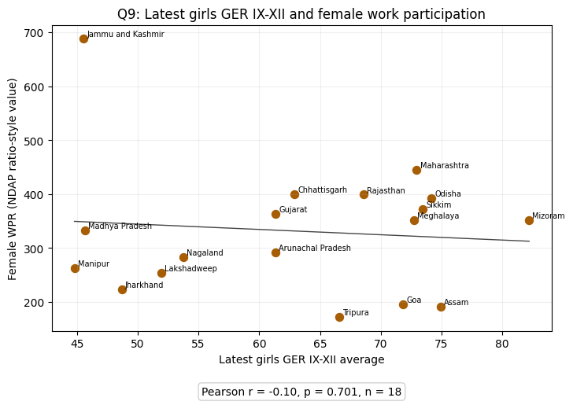
The scatter of latest girls' GER IX–XII average against female WPR shows essentially no relationship — Pearson r = -0.10, p = 0.701, n = 18. Jammu and Kashmir is again the extreme outlier at the top left: low girls' GER around 45 and female WPR near 690. Maharashtra at girls' GER around 74 has high female WPR near 445. Assam and Goa sit at high GER around 74–75 with very low female WPR around 195–200. Mizoram at the far right with girls' GER around 82 has female WPR around 355. The near-zero correlation and the visual scatter confirm that girls' secondary enrolment rates carry no information about female work participation across these states. The WPR variation is being driven by state-specific labour market structures, informal economy composition, and agricultural patterns — none of which are captured by enrolment.
Q9 interpretation
Across all three scatters, Jammu and Kashmir is the most important feature to understand. Its combination of low GPI, low girls' GER, and extremely high female WPR dominates the correlations and drives the negative slopes in graphs 2 and 3. The high female WPR in Jammu and Kashmir reflects the inclusion of agricultural and informal labour in WPR, not an education-to-employment pathway. Excluding this outlier, the relationships would be flatter still. The weak positive finding in graph 1 — GPI and female literacy — is the most interpretable result, and even that is not statistically significant. Enrolment parity and girls' GER are simply not predictors of female work participation in this dataset, because the indicator being explained is shaped by forces operating far outside the schooling system.
Takeaway: Official GPI shows a weak positive association with female ST literacy but a moderate negative association with female WPR, largely driven by Jammu and Kashmir as a structural outlier. Girls' GER and female WPR show essentially no relationship. Enrolment parity is measuring a schooling input; female work participation is determined primarily by labour market structure and informal economy composition. The two are decoupled in this data.
Q9. Does secondary dropout appear to be a stronger warning signal of poverty and weak labour outcomes than literacy alone?
This question compares two education indicators as warning signals: ST literacy and secondary dropout. ST literacy captures the absolute educational level of the ST population, while secondary dropout captures whether students are being retained in school at a later and more consequential stage. The goal is to see which of these two indicators is more closely associated with poverty, labour-market weakness, and MGNREG dependence.
The results show that secondary dropout is a stronger warning signal for ST poverty, and it is also highly relevant for MGNREG unmet demand and work participation. However, ST literacy is still important. It has a stronger relationship with unemployment and MGNREG 100-plus-days employment. Therefore, the answer is not that dropout completely replaces literacy. Rather, dropout is the sharper warning signal for welfare distress, while literacy remains important for understanding broader labour outcomes.
1. Comparing ST literacy and secondary dropout
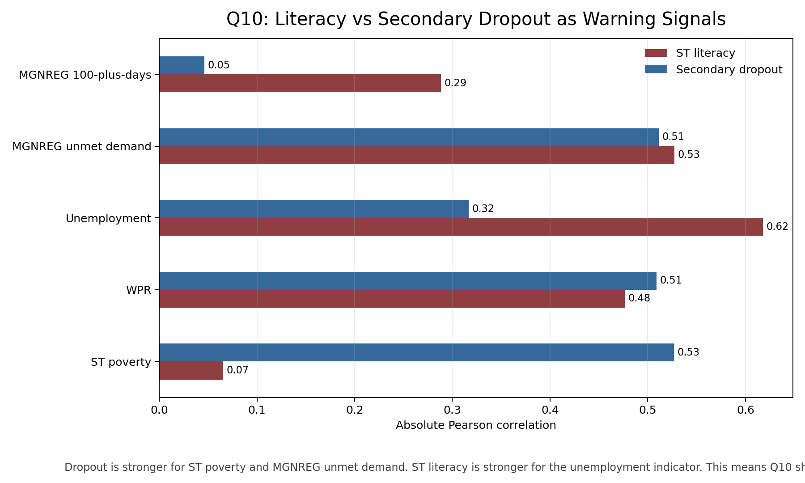
The chart compares the absolute Pearson correlation of ST literacy and secondary dropout with five outcomes: ST poverty, work participation rate, unemployment, MGNREG unmet demand, and MGNREG 100-plus-days employment. Because the chart uses absolute correlations, it shows the strength of association, not the direction of the relationship. This is important: the graph tells us which indicator is more closely related to each outcome, but it does not by itself show whether the relationship is positive or negative.
2. ST poverty: dropout is much stronger
For ST poverty, secondary dropout is clearly the stronger warning signal. The correlation strength for dropout is about 0.53, while the correlation strength for ST literacy is only about 0.07. This means that poverty is much more closely associated with whether students leave school at the secondary stage than with the general ST literacy level alone.
This is one of the most important findings of the project. It suggests that literacy alone is too broad and slow-moving to capture current educational vulnerability. A state may have some level of ST literacy, but if students are dropping out before completing secondary education, that may reveal a more immediate connection with poverty and household distress.
3. Work participation rate: both matter, but dropout is slightly stronger
For work participation rate, secondary dropout and ST literacy are both strongly related. The correlation strength is about 0.51 for dropout and about 0.48 for ST literacy. This means that neither indicator should be ignored.
The close values suggest that labour participation is shaped by both educational stock and school retention. ST literacy captures the broad educational base of the community, while dropout captures whether younger students are continuing through the school system. The slightly stronger dropout relationship suggests that retention may be especially useful for identifying states where education and work outcomes are not aligning well.
4. Unemployment: ST literacy is stronger
For unemployment, ST literacy is the stronger predictor. The correlation strength for ST literacy is about 0.62, while secondary dropout is about 0.32. This means that unemployment appears more closely linked with the overall literacy level than with dropout alone.
This result should be interpreted carefully. A stronger relationship between literacy and unemployment does not necessarily mean literacy causes unemployment. It may reflect the fact that more literate populations are more likely to enter formal labour markets, seek work, or be counted as unemployed. It may also reflect a mismatch between education and available jobs. Therefore, this result supports the broader argument that education must connect to actual livelihood opportunities.
5. MGNREG unmet demand: both are strong warning signals
For MGNREG unmet demand, both indicators are strong. ST literacy has a correlation strength of about 0.53, while secondary dropout is very close at about 0.51. This means unmet demand for work is associated with both weaker educational conditions and school-retention problems.
This result connects Q10 back to Q6 and Q8. MGNREG unmet demand is not only an employment issue; it also overlaps with educational disadvantage. States where households seek but do not receive work may also be states where students face greater pressure to leave school. In this sense, unmet demand, dropout, and literacy should be read together as part of a wider livelihood-distress profile.
6. MGNREG 100-plus-days: literacy is stronger, dropout is weak
For MGNREG 100-plus-days employment, ST literacy is the stronger indicator. Its correlation strength is about 0.29, while the dropout correlation is only about 0.05. This means that secondary dropout has almost no relationship with 100-plus-days employment in this sample.
This supports the earlier interpretation that 100-plus-days employment is not a clean distress indicator. Receiving many days of work can reflect household need, but it can also reflect better access to the scheme or better implementation. This is why unmet demand is more useful than 100-plus-days employment for identifying livelihood distress.
Q10 interpretation
Overall, Q10 shows that secondary dropout is a powerful warning signal, especially for ST poverty. Dropout is also closely related to work participation and MGNREG unmet demand. This supports the idea that retention failure is more policy-relevant than literacy alone when the goal is to identify states facing deeper education-livelihood stress.
However, ST literacy remains important. It is stronger for unemployment and MGNREG 100-plus-days employment, and it is almost equally strong for MGNREG unmet demand. This means that literacy and dropout should not be treated as competing indicators. They capture different parts of the same problem.
ST literacy reflects the long-term educational foundation of a community. Secondary dropout reflects current failure in school progression. A state with low literacy needs foundational education support, while a state with high dropout needs retention, transition, and completion support. The strongest policy diagnosis comes from using both indicators together.
Takeaway: Secondary dropout is the sharper warning signal for ST poverty, while ST literacy remains important for broader labour-market outcomes. For policy, the best approach is to treat literacy as the foundation and dropout as the immediate alarm bell.
Q10. Do high-ST-share states systematically perform worse, or do outcomes vary substantially?
This question uses the full all-states sample rather than the high-ST subsample to test whether ST population concentration is a meaningful predictor of ST outcomes. ST share in total state population is correlated against ST literacy and ST poverty. Contrary to what a simple homogeneity assumption might suggest, both relationships are statistically significant and positive — but in ways that tell different stories about what ST concentration actually predicts.
1. ST population share and ST literacy
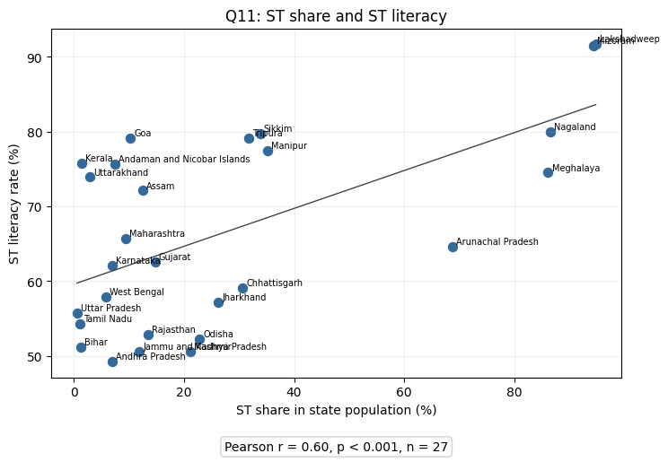
The scatter of ST share against ST literacy shows a strong positive relationship: Pearson r = 0.60, p < 0.001, n = 27. States with higher ST population concentrations tend to have considerably higher ST literacy rates. At the extreme right, Lakshadweep at around 95% ST share has ST literacy above 92%. Nagaland and Meghalaya, both around 85% ST share, show literacy rates of 80% and 75% respectively. At the left end, low-ST-share states like Bihar, Tamil Nadu, and Uttar Pradesh — all below 2% ST share — cluster in the 50–56% ST literacy range. The positive slope is strong and statistically significant. This is not evidence that ST concentration causes higher literacy; it reflects that the states where ST communities form the demographic majority are primarily North-Eastern states that have historically had better educational infrastructure, greater political representation of ST communities, and smaller internal inequality between ST and general populations. States where ST communities are a small minority embedded in larger non-ST populations tend to show lower ST literacy, likely because those communities have had less institutional visibility and policy reach. The scatter makes clear that ST population share is not a homogeneous disadvantage indicator — it describes very different contexts depending on whether concentration reflects a North-Eastern majority situation or a minority ST population within a larger state.
2. ST population share and ST poverty
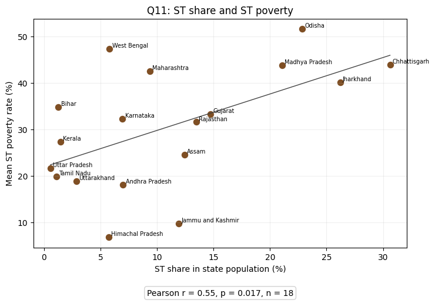
The scatter of ST share against ST poverty shows a moderate positive relationship: Pearson r = 0.55, p = 0.017, n = 18. Unlike the literacy result, this positive association is less encouraging — states with higher ST concentration tend to have higher ST poverty. Odisha at around 23% ST share has the highest poverty in the sample at over 52%. Chhattisgarh at 30% ST share shows poverty around 44%, and Jharkhand at 26% shows around 40%. At the lower end, Himachal Pradesh at 5% ST share has very low ST poverty near 6%, and Andhra Pradesh at around 6% ST share has poverty around 18%. Several states with low ST concentration — Bihar, West Bengal, Kerala — show moderate poverty rates that sit above the fitted line, meaning their ST communities face worse poverty than their low ST share would suggest. The positive relationship between ST concentration and poverty is therefore capturing something real: the states where ST communities are most numerous in absolute and proportional terms — Odisha, Jharkhand, Chhattisgarh, Madhya Pradesh — are also the states where ST poverty remains most severe. This stands in contrast to the literacy finding, where high ST share is associated with better outcomes. The divergence between the two scatters tells the more important story: high ST concentration in North-Eastern states coincides with reasonable literacy but not necessarily with poverty relief, while high ST concentration in central Indian states coincides with both higher literacy gaps and much higher poverty.
Q11 interpretation
The two scatters together dismantle the assumption that ST population concentration is a uniform predictor of outcomes in either direction. ST share predicts higher literacy and higher poverty simultaneously, which is only possible if the states with high ST concentration are themselves heterogeneous — which they are. The North-Eastern high-ST states tend to have higher literacy and lower poverty, while the central Indian high-ST states carry both lower literacy and far higher poverty. This heterogeneity is precisely what is lost when "high-ST states" are treated as a single policy category. A national programme calibrated to the average high-ST state will be systematically misaligned with both the North-Eastern context — where literacy is relatively strong but livelihood distress persists — and the central Indian context — where literacy deficits and poverty are compounding each other. The significant positive correlation with poverty in particular means that ST concentration is not an irrelevant demographic variable; it is pointing toward the states where ST communities are most economically vulnerable. But the literacy finding prevents any simple negative reading of concentration as purely a marker of disadvantage.
Takeaway: ST population concentration is positively associated with both ST literacy and ST poverty — not because concentration causes either, but because the high-ST states are internally divided between North-Eastern states with relatively stronger educational foundations and central Indian states with severe and compounding disadvantage. Treating them as a uniform category will misdirect both diagnosis and resources.
Q11. Do states with high concentrations of ST villages show different education and livelihood outcomes?
This question examines whether states with a higher concentration of Scheduled Tribe villages show different education and livelihood outcomes. The village concentration measure is normalized as the number of villages with more than 50% ST population per 100,000 ST population. This normalization is important because it avoids simply ranking states by size or total ST population.
The results show that ST village concentration is more strongly connected with livelihood distress than with education outcomes. States with more concentrated ST settlements tend to have higher MGNREG unmet demand, but village concentration does not strongly explain secondary dropout or ST literacy by itself. This suggests that settlement geography may matter more for access to work and public employment than for schooling outcomes alone.
1. Highest normalized ST village concentration
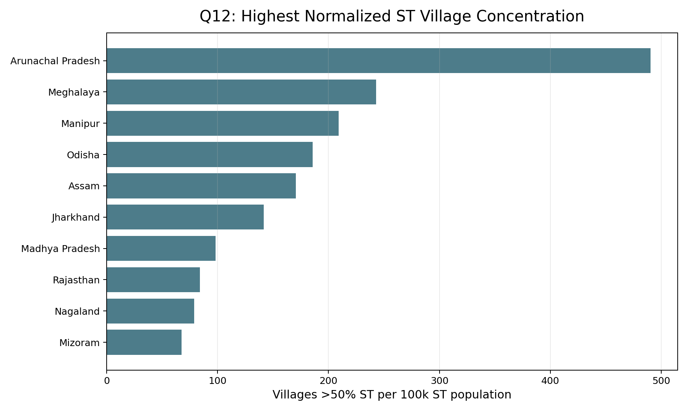
The ranking shows which states have the greatest concentration of ST-majority villages after adjusting for ST population size. Arunachal Pradesh is a clear outlier, with a much higher number of ST-majority villages per 100,000 ST population than the other states. Meghalaya, Manipur, Odisha, Assam, Jharkhand, Madhya Pradesh, Rajasthan, Nagaland, and Mizoram also appear among the higher-concentration states.
This indicator matters because ST village concentration can shape access to public services, local employment, schools, infrastructure, and administrative delivery. A high concentration of ST villages does not automatically mean worse outcomes, but it may indicate that geography and settlement patterns play an important role in how policy reaches ST households.
2. ST village concentration and MGNREG unmet demand
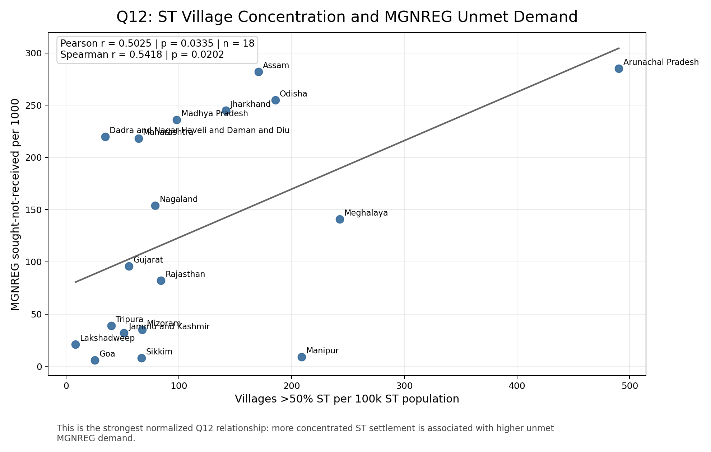
This is the strongest main Q12 result. States with more concentrated ST-majority villages tend to have higher MGNREG unmet demand. Both Pearson and Spearman correlations are positive and statistically meaningful, which suggests that the relationship is not only driven by a few extreme values.
The interpretation is that ST settlement concentration may be linked to livelihood distress or difficulty accessing public employment. In more concentrated ST-village contexts, households may face weaker local labour markets, greater remoteness, or implementation challenges in receiving MGNREG work. This does not prove causality, but it does show that village concentration is relevant for understanding unmet work demand.
Arunachal Pradesh, Assam, Odisha, Jharkhand, Madhya Pradesh, and Chhattisgarh are important cases in this graph because they show high unmet demand. Arunachal Pradesh is especially notable because it combines extremely high village concentration with very high unmet demand. Meghalaya and Manipur are useful exceptions: they have high village concentration but much lower unmet demand, showing that concentration alone does not determine the outcome.
3. Robustness check using villages with more than 75% ST population
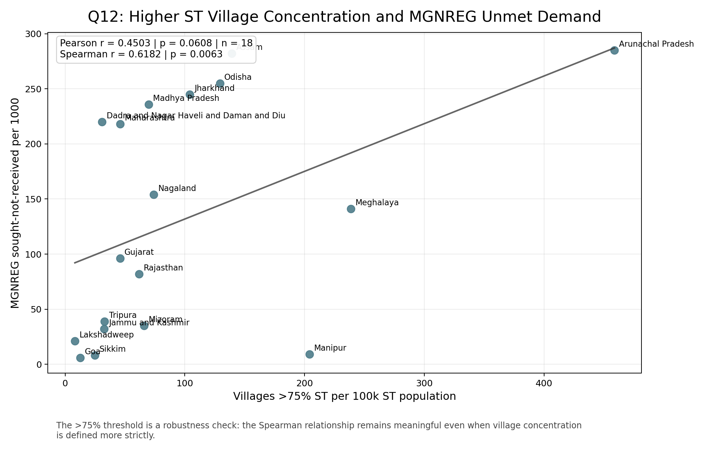
The robustness check uses a stricter definition of ST village concentration: villages with more than 75% ST population per 100,000 ST population. The relationship with MGNREG unmet demand remains positive. The Pearson result becomes slightly weaker, but the Spearman relationship becomes even stronger and statistically meaningful.
This matters because it shows that the finding is not only dependent on the 50% threshold. Even when ST village concentration is defined more strictly, states with higher concentration tend to rank higher on unmet MGNREG demand. The Spearman result is especially useful because it captures whether the ranking of states is similar across the two variables.
In simple terms, the robustness check strengthens the argument that ST village concentration is connected to livelihood distress. It suggests that the pattern is not just a statistical accident from one particular definition of village concentration.
4. ST village concentration and secondary dropout
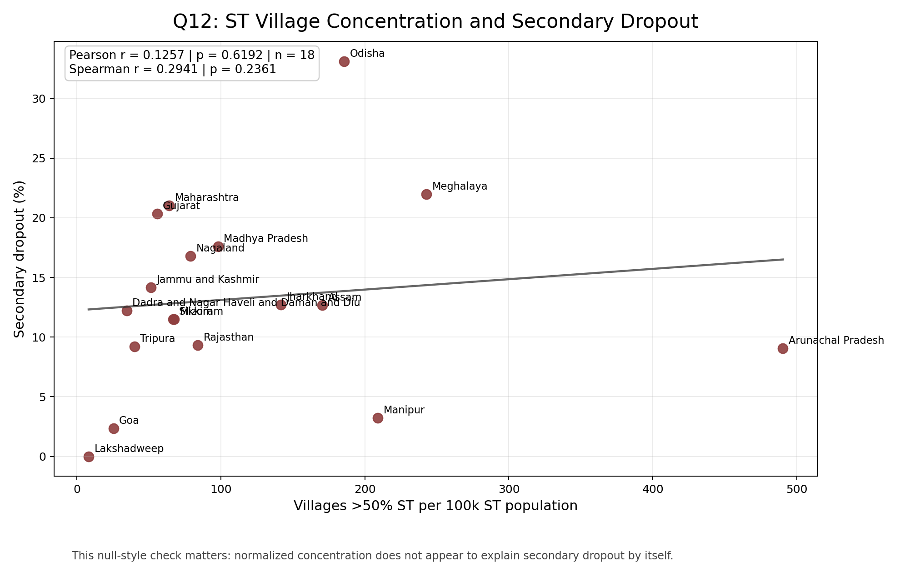
The relationship between ST village concentration and secondary dropout is weak. The slope is slightly positive, but the correlations are not statistically meaningful. This means that normalized ST village concentration does not clearly explain secondary dropout by itself.
This null-style result is important. It prevents the analysis from making an overly simple claim that ST village concentration automatically leads to worse education outcomes. Some high-concentration states, such as Arunachal Pradesh and Manipur, have relatively low secondary dropout, while Odisha has very high dropout despite not being the highest on the concentration measure.
The better interpretation is that dropout depends on more direct schooling and household factors: school access, quality, transition support, poverty, gender constraints, and local economic pressure. Village concentration may shape the context in which education policy is delivered, but it does not directly predict dropout in this sample.
5. ST village concentration and ST literacy
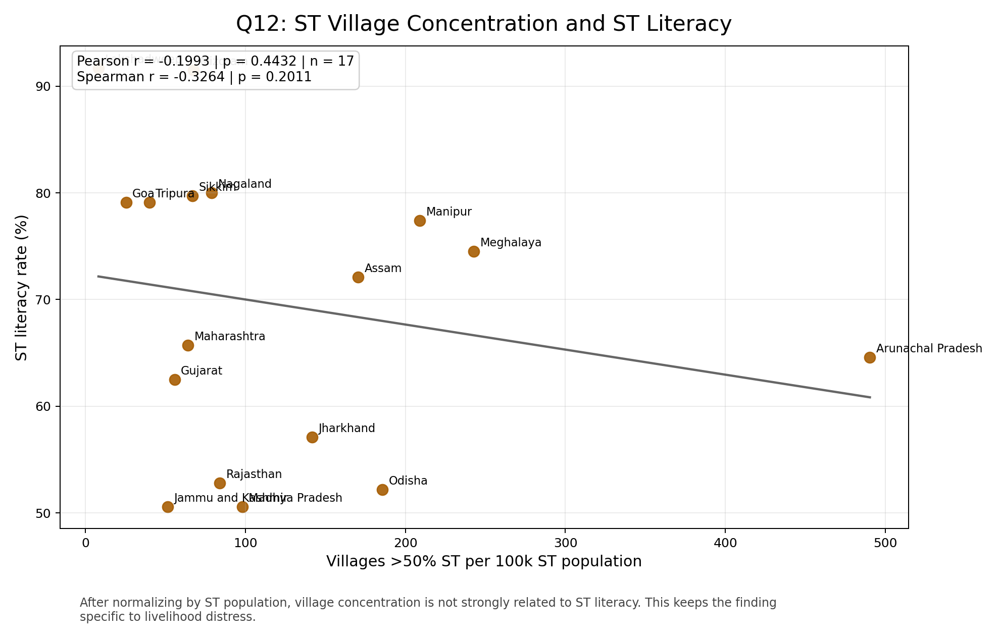
ST village concentration also does not show a strong relationship with ST literacy. The relationship is negative, meaning that higher concentration is loosely associated with lower ST literacy, but the relationship is weak and not statistically meaningful.
This again suggests that settlement concentration alone is not enough to explain education outcomes. Some states with high ST village concentration have relatively high ST literacy, while some lower-concentration states have weaker literacy outcomes. For example, Goa, Tripura, Sikkim, and Nagaland show relatively high ST literacy despite lower or moderate village concentration. Arunachal Pradesh has very high concentration but does not have the lowest ST literacy.
The main implication is that education outcomes depend on more than the spatial concentration of ST villages. Policy quality, school infrastructure, language, accessibility, household income, gender norms, and state capacity may all matter more directly.
Q11 interpretation
Taken together, Q11 shows that ST village concentration is most useful as a livelihood-access indicator, not as a direct education predictor. The strongest and most consistent relationship is with MGNREG unmet demand. This means that states with more concentrated ST settlements are more likely to report households seeking but not receiving work.
In contrast, village concentration does not strongly predict secondary dropout or ST literacy. This is important because it keeps the argument precise. The project should not claim that ST village concentration automatically causes poor education outcomes. Instead, the evidence suggests that concentration may create or reflect conditions where access to public employment and livelihood support becomes more difficult.
The policy implication is that ST-concentrated village geographies may need stronger local delivery systems. This includes better MGNREG work provision, more reliable administrative access, localized employment planning, and stronger coordination between livelihood support and education retention policies. The education problem may not come directly from village concentration, but livelihood stress in these areas can still affect schooling indirectly.
Takeaway: High ST village concentration is linked more clearly with MGNREG unmet demand than with secondary dropout or ST literacy. This suggests that settlement concentration matters most for livelihood access and public-work delivery, while education outcomes require additional school-level and household-level explanations.
Q12. Are there gender-specific disadvantages hidden behind state averages?
This question uses the constructed female literacy gap — the difference between male and female ST literacy within each state — to examine whether state-level averages conceal serious gendered disadvantage within ST populations. The analysis presents a ranking bar chart of states by the size of this internal gender gap, and then correlates it against female WPR across states.
1. Largest female literacy gaps across high-ST states
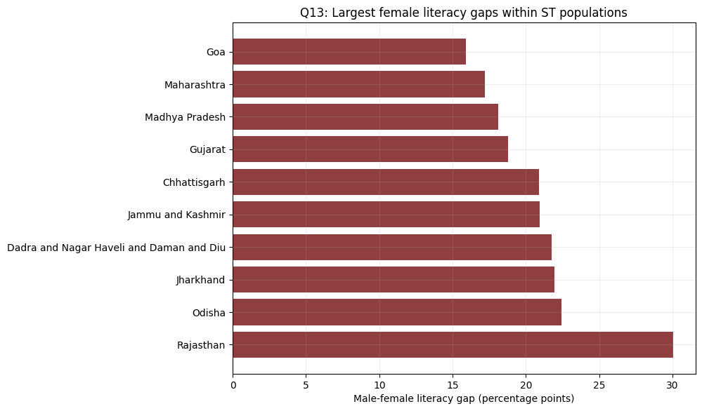
The bar chart ranks states by the male-female ST literacy gap — the difference in literacy rates between ST men and ST women within each state. Rajasthan has by far the largest gap at 30 percentage points, standing clearly apart from every other state in the sample. Odisha and Jharkhand follow at around 22 percentage points each, with Dadra and Nagar Haveli and Daman and Diu, Jammu and Kashmir, and Chhattisgarh all sitting around 21 points. Gujarat is at approximately 19 points, Madhya Pradesh at around 18.5, Maharashtra at around 17.5, and Goa at the lower end of the high-gap group at around 16 points. These are not gaps between ST and general populations — they are gaps between men and women within the ST community itself, meaning they represent differential exclusion from literacy that operates inside an already disadvantaged group. Rajasthan's 30-point gap is especially severe: it means that on average, ST women in Rajasthan are 30 percentage points less literate than ST men, a level of internal gender inequality that aggregate ST literacy figures would not surface at all.
2. Female literacy gap and female work participation
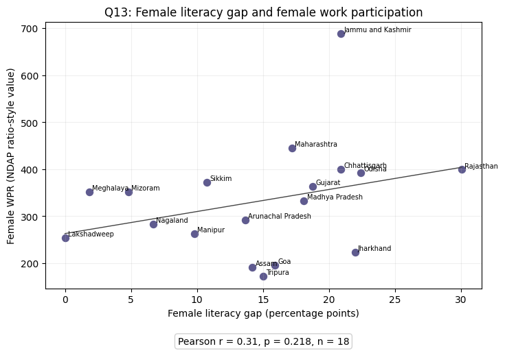
The scatter of the female literacy gap against female WPR shows a weak positive relationship — Pearson r = 0.31, p = 0.218, n = 18 — which is not statistically significant. The direction is counterintuitive: states with larger internal gender literacy gaps weakly tend to have higher female WPR rather than lower. Jammu and Kashmir is the dominant outlier, sitting at a gap of around 21 percentage points and female WPR near 690 — by far the highest in the sample. Rajasthan, with the largest gap of 30 points, has moderate female WPR around 400. States with small gender literacy gaps — Meghalaya, Mizoram, Lakshadweep — cluster at the lower end of female WPR, between 250 and 360. The positive slope should not be read as the gender literacy gap causing or benefiting female work participation. As seen throughout this analysis, high female WPR in several states reflects agricultural and informal labour that is counted in participation rates regardless of educational attainment. States with large internal gender literacy gaps tend to be states where women's economic role is predominantly in subsistence and agricultural contexts, which contributes to WPR without reflecting formal employment or education-linked labour market participation. The correlation is not statistically significant and is substantially distorted by the Jammu and Kashmir outlier. Without Jammu and Kashmir, the relationship would be flatter still.
Q12 interpretation
The most important finding in Q12 is in the bar chart rather than the scatter. The ranking makes concretely visible something that aggregate ST literacy figures cannot show: within states that already have relatively disadvantaged ST populations, women have been left further behind than men by margins as large as 30 percentage points. Rajasthan's gap of 30 points places it in a category of its own. Odisha, Jharkhand, Chhattisgarh, and Jammu and Kashmir follow with gaps above 21 points. These states are not being flagged here because their overall ST literacy is the lowest — they are being flagged because the progress in ST literacy that has occurred has been concentrated among men, leaving ST women far behind. The scatter against female WPR does not produce a meaningful or interpretable relationship, largely because the Jammu and Kashmir outlier and the agricultural labour composition of WPR distort the picture in the same way seen across Q1 and Q8. The WPR indicator cannot be used to assess whether female literacy gaps are translating into genuine economic disadvantage in this dataset; it is measuring the wrong thing for that purpose.
Takeaway: The bar chart is the central finding of Q13: Rajasthan, Odisha, Jharkhand, Chhattisgarh, and Jammu and Kashmir carry male-female ST literacy gaps exceeding 21 percentage points, with Rajasthan at 30. These are gaps within the ST population, not between ST and general populations, and they are invisible in aggregate literacy figures. The scatter against female WPR produces a weak and statistically insignificant positive relationship driven largely by the Jammu and Kashmir outlier and the agricultural composition of WPR — it should not be used to draw conclusions about whether the gender literacy gap is consequential for women's economic participation.
Recommendations and Suggestions
The main policy lesson from this analysis is that ST educational disadvantage should not be addressed only through enrolment expansion. GER shows whether students are entering the schooling system, but it does not show whether they are staying, completing school, or gaining better livelihood outcomes. Policy should therefore shift from a school access-based approach to a retention and livelihood improvement approach.
1. Move from increasing GER to reducing dropout
The analysis shows that GER does not necessarily correspond to lower poverty and is not a reliable retention indicator by itself. High GER can coexist with poverty, delayed progression, repeat enrolment, and weak livelihood outcomes. Therefore, policy should stop treating high enrolment as sufficient evidence of educational success.
What should be done differently is that state education departments should track secondary dropout, class transition rates, and completion rates more seriously than GER alone. The focus should be on whether ST students are actually moving through the school system, not just whether they are enrolled at a particular point in time.
- Track dropout at the upper-primary to secondary transition.
- Track secondary completion, not just secondary enrolment.
- Identify schools and districts where ST students enrol but do not continue.
- Use dropout as an early warning signal for deeper poverty and livelihood stress.
2. Use the ST literacy gap as a targeting tool, not just the ST literacy rate
The analysis shows that the ST literacy rate alone is incomplete. It only tells us the absolute literacy level of ST communities. The literacy gap is more useful because it shows whether ST communities are falling behind the broader state population.
What should be done differently is that education policy should target states and districts with large ST-general literacy gaps, even if their ST literacy rate does not look extremely low. A state may have moderate ST literacy but still show relative exclusion if the general population is much further ahead.
- Use literacy gap as a priority indicator in ST education planning.
- Identify states with both low ST literacy and large literacy gaps as highest priority.
- Monitor whether ST literacy is improving at the same pace as overall state literacy.
- Design remedial learning and adult literacy programmes specifically for high-gap areas.
3. Treat secondary dropout as a poverty and livelihood warning signal
The analysis suggests that dropout is more informative than GER for understanding poverty and structural disadvantage. Dropout tells us where students are leaving the education system before completing important stages of schooling.
What should be done differently is that dropout policy should not be treated only as an education department issue. Since dropout may reflect household economic pressure, migration, marriage, household work, transport barriers, and weak job expectations, dropout prevention should be linked with household support.
- Provide targeted support to students at risk of leaving secondary school.
- Expand hostels, transport support, bridge courses, counselling, and remedial classes.
- Prioritize states where secondary dropout and ST poverty are both high.
- Use dropout data to identify students whose households may need livelihood or social protection support.
4. Link education policy with MGNREG and livelihood support
The analysis shows that MGNREG unmet demand is an important indicator of livelihood distress. States with higher unmet demand also tend to have higher secondary dropout. This suggests that school retention problems and household livelihood stress cluster together.
What should be done differently is that dropout reduction should be coordinated with livelihood policy. If households seek MGNREG work but do not receive it, families may face income pressure, making the opportunity cost of keeping children in school higher. In such cases, students may leave school to help with wage work, farming, migration, sibling care, or household responsibilities.
- Prioritize MGNREG work provision in districts with high ST dropout and high unmet demand.
- Improve timely work allocation and payment reliability under MGNREG.
- Use MGNREG unmet demand as a distress indicator in education planning.
- Coordinate school-retention schemes with rural livelihood support in high-risk districts.
5. Interpret work participation carefully instead of treating it as automatically positive
The analysis shows that work participation is an ambiguous indicator. Higher WPR can reflect better livelihood opportunities, but it can also reflect distress-driven labour entry. When dropout and work participation rise together, higher WPR may mean that students are leaving school early and entering work under economic pressure.
What should be done differently is that policy should not only ask whether ST populations are working. It should ask what kind of work they are doing, whether it is secure, whether it is paid fairly, and whether young people are entering work after completing school or because they were forced to drop out.
- Separate secure employment from casual, informal, agricultural, and distress work.
- Track youth work participation alongside secondary dropout.
- Identify states where high WPR may reflect early labour entry rather than successful employment.
- Build local skill and employment programmes for ST youth after secondary school.
6. Connect schooling to local employment opportunities
The analysis shows that higher ST schooling participation does not necessarily mean lower MGNREG dependence. Some states can have relatively high secondary participation while still relying heavily on public employment because local jobs, income security, and labour-market opportunities remain limited.
What should be done differently is that education policy should be connected to actual livelihood pathways. If schooling does not lead to visible employment opportunities, families may not see education as a route to economic security.
- Link secondary schooling with vocational training and local labour-market needs.
- Develop apprenticeships and placement support for ST students.
- Focus on states where GER is high but MGNREG dependence or unmet demand remains high.
- Create district-level education-to-work transition plans for ST youth.
7. Move beyond gender parity in enrolment
The analysis shows that gender parity in enrolment is important, but it is not the same as gender equality in livelihoods. Girls may be enrolled in school, but still face barriers to completion, mobility, work, income, and equal opportunity after education.
What should be done differently is that policy should track what happens after girls enter school. The focus should move from only measuring girls' enrolment to measuring girls' completion, transition to higher education, skill training, and work participation.
- Track female completion rates, not only girls' enrolment or GPI.
- Address early marriage, transport, safety, household work, and mobility barriers.
- Link girls' education schemes with skill and employment programmes.
- Use female WPR alongside GPI to see whether education is translating into work opportunities.
Overall recommendation
The overall recommendation is to build a combined ST education-livelihood monitoring framework. Instead of looking at GER, literacy, dropout, poverty, MGNREG, and gender indicators separately, states should track them together.
A useful policy dashboard should include ST literacy gap, secondary dropout, ST poverty, MGNREG unmet demand, work participation, female literacy, GPI, and female WPR. This would help identify states where educational disadvantage and livelihood distress overlap.
What should be done differently is that policy should move from simply enrolling ST students to ensuring that they stay in school, complete secondary education, and have real livelihood opportunities after schooling.